Estimado de Eficiencia
| Tamaño de entrada | Complejidad requerida |
|---|---|
| o | |
| o |
Indice Algoritmos
Indice Estructuras
| Estructura | Memoria Total (usando int) |
|---|---|
| Arrays | |
| Bitsets | |
| Prefix Sum/Tabla Aditiva | |
| Prefix Sum of Matrix | |
| Sparse Table | |
| Difference Array | |
| Vectors | |
| Strings | |
| Tries | (asumiendo que ninguna palabra es substring de otra) |
| Hashes | |
| Z Function | |
| Deques | |
| Queues | |
| Priority Queues | |
| Sets | |
| Multisets | |
| Indexed Sets | |
| Bitmask Sets | |
| Disjoint Set Union | |
| Maps | |
| Iteradores | |
| Binary Index Tree/Fenwick Tree | |
| Segment Tree | |
| Lazy Segment Tree | |
| Geometria: Punto | |
| Geometria: Vector | |
| Geometria: Recta | |
| Geometria: Poligono | |
| Grafos: Lista de adyacencias | grafo direccional o grafo direccional pesado |
| Grafos: Lista de aristas | para grafos direccionales o para grafos direccionales pesados |
| Grafos: Matriz de adyacencia |
La memoria total se multiplica por 2 si los elementos son
long long
Indice Funciones Builtin
| Funcion | Descripcion |
|---|---|
| Funciones de Ordenacion: Sort | Ordena estructuras de datos con iteradores de acceso aleatorio en tiempo |
| Funciones de Ordenacion: Random Shuffle | Ordena aleatoriamente estructuras de datos con iteradores de acceso aleatorio en tiempo |
| Funciones de Ordenacion: Rotate | Rota los elementos de un rango de forma que un iterador intermedio pase a ser el primero en tiempo |
| Funciones de Ordenacion: Is Sorted | Verifica si un rango esta ordenado en tiempo |
| Funciones de Busqueda: Lower Bound | Devuelve un puntero al primer elemento cuyo valor es >= a x en tiempo |
| Funciones de Busqueda: Upper Bound | Devuelve un puntero al primer elemento cuyo valor es > a x en tiempo |
| Funciones de Busqueda: Equal Range | Devuelve una tupla con las salidas de lower_bound() y upper_bound() respectivamente en tiempo |
| Funciones de Busqueda: Min Element | Devuelve un iterador al elemento minimo dentro de un rango en tiempo |
| Funciones de Busqueda: Max Element | Devuelve un iterador al elemento maximo dentro de un rango en tiempo |
| Funciones de Conversion: To String | Convierte un numero real en una cadena en tiempo |
| Funciones de Conversion: Atoi | Convierte una arreglo de caracteres en un entero en tiempo |
| Funciones de Bits: Counting Leading Zeros | Retorna la cantidad de ceros antes del 1 mas significativo de x en tiempo |
| Funciones de Bits: Counting Trailing Zeros | Retorna la cantidad de ceros despues del 1 menos significativo de x en tiempo |
| Funciones de Bits: Popcount | Retorna la cantidad de bits en 1 de x en tiempo |
| Funciones de Bits: Parity | Retorna 1 si la cantidad de bits en 1 de x es par y 0 en caso contrario en tiempo |
| Funciones de Conteo: Count | Devuelve la cantidad de ocurrencias de un elemento en otro elemento iterable en tiempo |
| Funciones de Conteo: Count If | Devuelve la cantidad de elemntos cumplen una determinada condicion en otro elemento iterable en tiempo |
| Funciones Aritmeticas: GCD | Devuelve el maximo comun divisor en tiempo |
| Funciones Aritmeticas: LCM | Devuelve el minimo comun multiplo en tiempo |
| Funciones Utilitarias: Swap | Intercambia los valores de dos variables cualesquiera en tiempo |
| Funciones de Entrada/Salida: Setprecision | Establece la cantidad de digitos decimales mostrados en el output en tiempo |
Librerias God
- bits/stdc++.h
Tips
-
Multiplicar en lugar de dividir
- Flotantes
int a, b, c, d; double val1 = a/b; double val2 = c/d; if (val1 == val2) { // do stuff… }- Enteros
int a, b, c, d; if (a*d == c*b) { // do stuff… } -
Los algoritmos de grafos de obtencion de caminos minimos que son de 1 a todos se pueden transformar en algoritmos para encontrar caminos de todos a uno (revirtiendo el sentido de los ejes)
-
Los algoritmos de grafos de obtencion de caminos minimos que son de 1 a todos se pueden usar para computar caminos de todos a todos (haciendo n ejecuciones del algoritmo, una desde cada origen)
-
Si falta informacion en el grafo, agregar vertices para codificar dicha informacion
-
Encarar los problemas de calcular los estados posibles como problemas de grafos
-
Setear MAXN en un valor ligeramente mayor a
npara evitar casos borde de una manera sencilla -
Si se va a recorrer una matriz, poner un marco con valores inalcanzables para detectar/evitar casos bordes
-
Usar un "centinela" como el valor al que queremos llegar para cortar la recursion
-
Saber matematicas, pensamiento logico. Es mejor poder demostrar algo y saber que funciona en vez de ir a ciegas con una implementacion
-
Resolver un problema consiste en detectar propiedades y observaciones del problema. Un Wrong Answer (WA) probablemente significa que faltan observaciones
-
Un Accepted (AC) no necesariamente significa que este completamente bien. Siempre comparar con otras soluciones
-
UPSOLVEAR. Aprender lo que no sabes
-
Siempre es preferible utilizar la funcion
sort()que mantener una estructura ordenada (como sets o maps) -
Si necesitamos valores de indices grandes pero no necesariamente todos ellos, se puede utilizar una funcion
c(i)que dado un indiceicomprima el valor del indice en uno mas pequeño que podamos manejar. La funcion debe respetar que, dados dos indicesiyj, tal quei < j,c(i) < c(j). NOTAR que debemos conocer los indices de antemano -
Chequear divisibilidad para potencias de 2 utilizando la operacion AND: un numero
xes divisible por2^ksi y solo six & (2^k - 1) == 0. NOTAR que podemos chequear facilmente paridad utilizando esta tecnica -
Multiplicar y dividir por potencias de 2 utilizando shifteos
-
Representar la data en binario cuando los datos solo pueden tomar 2 valores
-
Siempre que las caracteristicas del problema lo permitan, podemos plantear los estados de un problema de programacion dinamica como un DAG
-
Pensar en busqueda binaria para los problemas de minimizar un maximo o maximizar un minimo
-
Cuando en un problema de flujos y cortes quiera tener muchas fuentes y resumideros, puedo hacer un S' y un T' con capacidad infinita y resolverlo como un problema de max flow
-
Si en una dp solo me muevo del estado i al estado i+1 y no necesito preservar informacion historica, puedo simplemente tener una dp nueva y una vieja e irlas actualizando en cada paso
-
Si existen dos algoritmos para un mismo problema, uno eficiente para casos chicos y otro eficiente para casos grandes, suele ser posible combinarlos usando un umbral , donde los casos con elementos, en donde se resuelven utilizando el primer algoritmo y los casos en donde se resuelven utilizando el primer algoritmo. Este enfoque reduce un factor a en la complejidad final.
-
Usando la propiedad de que un numero solo puede ser expresado como la suma de a lo sumo numeros distintos, podemos mejorar la complejidad de problemas de programacion dinamica de a procesando cada grupo una vez en
-
Los segment trees no estan restringidos a almacenar unicamente numeros. Se puede utilizar cualquier estructura en ellos a coste de mayor complejidad computacional y mas espacio ocupado en memoria.
-
Al momento de trabajar con distancia Manhattan, resulta util rotar los puntos 45° de la siguiente manera: . Esto permite resolver el problema de clacular la distancia maxima entre dos puntos como un problema de maximizacion en en lugar de , ya que podemos calcular la distancia Manhattan entre dos puntos como .
-
Los problemas de conteo se resuelven mas facil siempre que se puedan plantear como una biyeccion..
-
Para intercambiar cualquier tipo de estructuras es mejor utilizar
swap()en vez de simplemente asignarle una variable a otra, puesto que simplemente intercambia los punteros..
Funciones de Ordenacion
Sort
- vectores:
vector<int> v = {4,2,5,3,5,8,3};
sort(v.begin(),v.end()); // <-- DE MENOR A MAYOR
sort(v.rbegin(),v.rend()); // <-- DE MAYOR A MENOR
- arreglos:
int n = 7;
int a[] = {4,2,5,3,5,8,3};
sort(a,a+n);
- strings:
string s = "monkey";
sort(s.begin(), s.end());
Tambien podemos utilizar la funcion sort() con una comparacion ad-hoc.
Por ejemplo, definimos la funcion comp() que ordena strings primero por su longitud y luego alfabeticamente:
bool comp(string a, string b) {
if (a.size() != b.size())
return a.size() < b.size();
return a < b;
}
Luego, dado v un vector de strings, podemos ordenar utilizando comp() llamando a sort() como sigue:
sort(v.begin(), v.end(), comp);
NOTA:
- El orden asociado a
compdebe ser debil y estricto.
Random Shuffle
- vectores:
vector<int> v = {4,2,5,3,5,8,3};
random_shuffle(v.begin(),v.end());
- arreglos:
int n = 7;
int a[] = {4,2,5,3,5,8,3};
random_shuffle(a,a+n);
- strings:
string s = "monkey";
random_shuffle(s.begin(), s.end());
Rotate
- vectores:
vector<int> v = {1, 2, 3, 4, 5};
// Rotar 1 posicion a la derecha
rotate(v.begin(), v.end() - 1, v.end());
for (int x : v) cout << x << " "; // 5 1 2 3 4
- arreglos:
int array[] = {1, 2, 3, 4, 5};
int n = 5;
int k = 2;
rotate(array, array + k, array + n);
for(int i = 0; i < n; i++) cout << array[i] << " "; // 3 4 5 1 2
- strings:
string s = "monkey";
// Rotar 1 posicion a la izquierda
rotate(s.begin(), s.end() + 1, s.end());
cout << s << "\n"; // onkeym
Is Sorted
vector<int> v = {1, 2, 3, 4, 5};
cout << is_sorted(v.begin(), v.end()) << "\n"; // 1
Funciones de Busqueda
NOTAS:
- Las siguientes funciones requieren que la estructura a iterar se encuentre ordenada de menor a mayor
Lower Bound
auto a = lower_bound(array, array+n, x);
Upper Bound
auto b = upper_bound(array, array+n, x);
Equal Range
auto r = equal_range(array, array+n, x);
cout << r.second-r.first << "\n";
Min Element
int a[] = {7, 3, 9, 1, 5};
int n = 5;
auto it = min_element(a, a + n);
cout << *it << "\n"; // 1
cout << it - a << "\n"; // 3 (posicion del minimo)
Max Element
int a[] = {7, 3, 9, 1, 5};
int n = 5;
auto it = max_element(a, a + n);
cout << *it << "\n"; // 9
cout << it - a << "\n"; // 2 (posicion del maximo)
Funciones de Conversion
To String
int x = 1000;
string s = to_string(x);
cout << s << "\n"; // "1000"
NOTA:
- Para los tipos de coma flotante, solo se mostraran 6 digitos donde se redondea el ultimo
Flotantes con Precision Fijada
- notacion fija
double d = 3.141592653589793;
ostringstream oss;
oss.precision(10); // Configurar precision
oss << d; // Convertir numero a string con la precision dada
string s = oss.str();
cout << scientific << "\n"; // "3.141592654"
- notacion cientifica
double d = 3.141592653589793;
ostringstream oss;
oss << scientific << setprecision(4) << d;
string scientific = oss.str();
cout << scientific << "\n"; // "3.1416e+00"
NOTA:
- El ultimo digito siempre es redondeado
Atoi
- enteros
string s1 = "123";
const char* s2 = "-456";
int x = atoi(s1);
int y = atoi(s2);
int z = atoi("789");
- long long
string s1 = "123";
const char* s2 = "-456";
ll x = atoll(s1);
ll y = atoll(s2);
ll z = atoll("789");
NOTAS:
- Si el string comienza con numeros y luego cualquier otro tipo de caracter, solo se convertira hasta antes del primer caracter no numerico
- Si el string no comienza con caracteres numericos, la funcion devolvera 0
Funciones de Conteo
Count
- Vectores
vector<int> v = {1,2,3,2,2};
cout << count(v.begin(), v.end(), 2) << "\n"; // 3
- Strings
string s = "BANANA";
cout << count(s.begin(), s.end(), 'A') << "\n"; // 3
- Arrays
array<double, 5> a = {1.0, 2.0, 1.0};
cout << count(a.begin(), a.end(), 1.0) << "\n"; // 2
Count If
- Vectores
vector<int> v = {1,2,3,2,2};
cout << count_if(v.begin(), v.end(), [](int x) { return x % 2 != 0; }); << "\n"; // 2
- Strings
string s = "BANANA";
cout <<
count_if(s.begin(), s.end(), [](char c) {
return c == 'A' || c == 'E' || c == 'I' || c == 'O' || c == 'U';
});
<< "\n"; // 3
- Arrays
array<double, 5> a = {1.0, 2.0, 1.0};
cout << count_if(a, a + 5, [](int x) { return x > 1; }); << "\n" ; // 1
Funciones de Bits
Count Leading Zeros
- enteros
int x = 5328; // 00000000000000000001010011010000
cout << __builtin_clz(x) << "\n"; // 19
- long long
long long x = 5328; // 0000000000000000000000000000000000000000000000000001010011010000
cout << __builtin_clzll(x) << "\n"; // 51
Count Trailing Zeros
- enteros
int x = 5328; // 00000000000000000001010011010000
cout << __builtin_ctz(x) << "\n"; // 4
- long long
long long x = 5328; // 0000000000000000000000000000000000000000000000000001010011010000
cout << __builtin_ctzll(x) << "\n"; // 4
Popcount
- enteros
int x = 5328; // 00000000000000000001010011010000
cout << __builtin_popcount(x) << "\n"; // 5
- long long
long long x = 5328; // 0000000000000000000000000000000000000000000000000001010011010000
cout << __builtin_popcountll(x) << "\n"; // 5
Parity
- enteros
int x = 5328; // 00000000000000000001010011010000
cout << __builtin_parity(x) << "\n"; // 1
- long long
long long x = 5328; // 0000000000000000000000000000000000000000000000000001010011010000
cout << __builtin_parityll(x) << "\n"; // 1
Funciones Aritmeticas
GCD
int a = 48;
int b = 18;
gcd(a,b); // 6
Los compiladores de 2025 y posteriores calculan gcd de valores constantes en tiempo de compilacion
LCM
int a = 48;
int b = 18;
lcm(a,b); // 144
Los compiladores de 2025 y posteriores calculan lcm de valores constantes en tiempo de compilacion
Funciones Utilitarias
Swap
int a = 5, b = 10;
swap(a, b);
cout << a << " " << b << "\n"; // 10 5
vector<int> v1 = {1, 2, 3};
vector<int> v2 = {4, 5, 6};
swap(v1, v2);
for (int x : v1) cout << x << " ";
cout << "\n"; // 4 5 6
for (int x : v2) cout << x << " ";
cout << "\n"; // 1 2 3
Funciones de Entrada/Salida
Setprecision
- Presicion Fija:
double pi = 3.141592653589793;
cout << fixed << setprecision(4) << pi << "\n"; // 3.1416
- Notacion Cientifica:
double pi = 3.141592653589793;
cout << scientific << setprecision(3) << pi << "\n"; // 3.142e+00
NOTAS:
- Por defecto la presicion es fija y de 6 digitos significativos
- El ultimo digito siempre se redondea
- Una vez utilizada, afecta todas las impresiones siguientes del programa
Arrays
Lista de elementos.
Especialmente eficiente para:
- Acceder valores rapidamente
- Modificar valores rapidamente
Usar siempre que se puedan.
Inicializacion:
int A[10] = {}; // inicializado a 0
int B[200]; // inicializado con la memoria que ya estaba (basura)
Tamaño fijo
Su memoria se aloja de manera contigua por lo cual es ligeramente mas rapido que un vector de su mismo tamaño
Bitsets
Un areglo cuyos elementos solo pueden ser 1 o 0.
Especialmente eficiente para:
- Reducir memoria (cada entrada solo ocupa 1 bit)
- Utilizar operadores de bits, como
&(and),|(or),^(xor),~(not)<< >>(shifts)
Inicializacion:
bitset<10> bs; // inicializado a 0
bitset<10> bs(string("0010011010")); // inicializado de derecha a izquierda arbitrariamente
Funciones:
bs.set(): Pone todos los bits en 1
bs.set(k) Pone solo el k-esimo bit en 1 (el orden es de derecha a izquierda y se indexa desde 0)
bs.reset(): Pone todos los bits en 0
bs.reset(k) Pone solo el k-esimo bit en 0 (el orden es de derecha a izquierda y se indexa desde 0)
bs.flip(): Invierte todos los bits
bs.flip(k) Invierte solamente el k-esimo bit (el orden es de derecha a izquierda y se indexa desde 0)
bs.any(): Devuelve true si hay al menos un bit en 1
bs.none(): Devuelve true si todos los bits estan en 0
bs.all(): Devuelve true si todos los bits estan en 1
bs.size(): Devuelve el numero total de bits en el bitset
bs.count(): Devuelve el numero de 1s presentes en el bitset (NOTAR que bs.size() - bs.count() es la cantidad de 0s)
bs.to_ulong()/bs.to_ullong(): Convierte el bitset a un entero o long long no signado respectivamente. El tamaño del bitset no debe exceder de 32 para enteros o de 64 para long longs
bs.to_string(): Convierte el bitset en un string
El tamaño debe ser una constante
Para poder operar entre bitsets, estos deben tener el mismo tamaño
La conversion del bitset a un numero negativo debe realizarse manualmente
Prefix Sum
Especialmente eficiente para:
- Responder consultas de rango o subintervalos
- Devoler la suma maxima cuando hay numeros negativos
vector<int> S;
S.push_back(0);
void sumaAditiva (vector<int > &A) {
for(int i = 0; i < A.size(); i++) {
S.push_back(A[i] + S[i]);
}
}
Complejidad construccion:
Complejidad consulta:
Complejidad actualizacion:
NOTAS:
- Se necesitan dos arreglos/vectores (uno con los elementos y otro con la suma de los primeros i elementos)
- El arreglo de la suma tiene un elemento mas el cual es el 0
Prefix Sum of Matrix
Especialmente eficiente para:
- Responder consultas de area
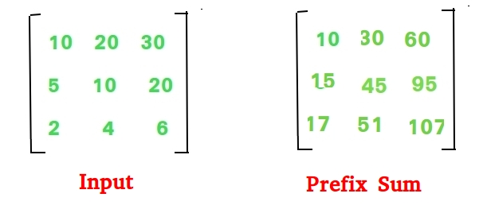
#define R 4
#define C 5
// calculating new array
void prefixSum2D(int a[][C])
{
int psa[R][C];
psa[0][0] = a[0][0];
// Filling first row and first column
for (int i = 1; i < C; i++)
psa[0][i] = psa[0][i - 1] + a[0][i];
for (int i = 1; i < R; i++)
psa[i][0] = psa[i - 1][0] + a[i][0];
// updating the values in the cells
// as per the general formula
for (int i = 1; i < R; i++) {
for (int j = 1; j < C; j++)
// values in the cells of new
// array are updated
psa[i][j] = psa[i - 1][j] + psa[i][j - 1]
- psa[i - 1][j - 1] + a[i][j];
}
}
Luego, para calcular la suma del area A
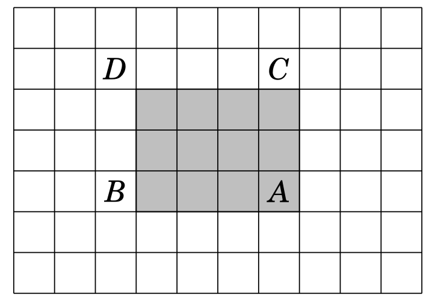
solamente devemos devolver psa[posiA][posjA] - psa[posiB][posjB] - psa[posiC][posjC] + psa[posiD][posjD].
Complejidad construccion:
Complejidad consulta:
Complejidad actualizacion:
Sparse Table
Especialmente eficiente para:
- Responder consultas de rango o subintervalos donde se desea hallar el minimo o maximo elemento
Complejidad construccion:
Complejidad consulta:
Complejidad actualizacion:
Minimo
// lookup[i][j] is going to store minimum
// value in arr[i..j]. Ideally lookup table
// size should not be fixed and should be
// determined using n Log n. It is kept
// constant to keep code simple.
int lookup[MAXN][MAXN];
// Fills lookup array lookup[][] in bottom up manner.
void buildSparseTable(int arr[], int n)
{
// Initialize M for the intervals with length 1
for (int i = 0; i < n; i++)
lookup[i][0] = arr[i];
// Compute values from smaller to bigger intervals
for (int j = 1; (1 << j) <= n; j++) {
// Compute minimum value for all intervals with
// size 2^j
for (int i = 0; (i + (1 << j) - 1) < n; i++) {
// For arr[2][10], we compare arr[lookup[0][7]]
// and arr[lookup[3][10]]
if (lookup[i][j - 1] <
lookup[i + (1 << (j - 1))][j - 1])
lookup[i][j] = lookup[i][j - 1];
else
lookup[i][j] =
lookup[i + (1 << (j - 1))][j - 1];
}
}
}
// Returns minimum of arr[L..R]
int query(int L, int R)
{
// Find highest power of 2 that is smaller
// than or equal to count of elements in given
// range. For [2, 10], k = 3
int k = 31 - __builtin_clz(R - L + 1);
// Compute minimum of last 2^k elements with first
// 2^k elements in range.
// For [2, 10], we compare arr[lookup[0][3]] and
// arr[lookup[3][3]],
if (lookup[L][k] <= lookup[R - (1 << k) + 1][k])
return lookup[L][k];
else
return lookup[R - (1 << k) + 1][k];
}
Maximo
// lookup[i][j] is going to store maximum
// value in arr[i..j]. Ideally lookup table
// size should not be fixed and should be
// determined using n Log n. It is kept
// constant to keep code simple.
int lookup[MAXN][MAXN];
// Fills lookup array lookup[][] in bottom up manner.
void buildSparseTable(int arr[], int n)
{
// Initialize M for the intervals with length 1
for (int i = 0; i < n; i++)
lookup[i][0] = arr[i];
// Compute values from smaller to bigger intervals
for (int j = 1; (1 << j) <= n; j++) {
// Compute maximum value for all intervals with
// size 2^j
for (int i = 0; (i + (1 << j) - 1) < n; i++) {
// For arr[2][10], we compare arr[lookup[0][7]]
// and arr[lookup[3][10]]
if (lookup[i][j - 1] >
lookup[i + (1 << (j - 1))][j - 1])
lookup[i][j] = lookup[i][j - 1];
else
lookup[i][j] =
lookup[i + (1 << (j - 1))][j - 1];
}
}
}
// Returns maximum of arr[L..R]
int query(int L, int R)
{
// Find highest power of 2 that is smaller
// than or equal to count of elements in given
// range. For [2, 10], k = 3
int k = 31 - __builtin_clz(R - L + 1);
// Compute maximum of last 2^k elements with first
// 2^k elements in range.
// For [2, 10], we compare arr[lookup[0][3]] and
// arr[lookup[3][3]],
if (lookup[L][k] >= lookup[R - (1 << k) + 1][k])
return lookup[L][k];
else
return lookup[R - (1 << k) + 1][k];
}
Difference Array
Especialmente eficiente para:
- Actualizar rangos
// Creates a diff array D[] for A[] and returns
// it after filling initial values.
vector<int> initializeDiffArray(vector<int>& A)
{
int n = A.size();
// We use one extra space because
// update(l, r, x) updates D[r+1]
vector<int> D(n + 1);
D[0] = A[0], D[n] = 0;
for (int i = 1; i < n; i++)
D[i] = A[i] - A[i - 1];
return D;
}
Consulta:
int retrieveDiffArray(vector<int>& D, int index)
{
int sum = 0;
for (int i = 0; i < index; i++)
sum += D[i];
return s;
}
indexdebe estar indexado desde 1
Actualizacion:
void updateDiffArray(vector<int>& D, int l, int r, int x)
{
D[l] += x;
D[r + 1] -= x;
}
lyrdebe estar indexado desde 0
Complejidad construccion:
Complejidad consulta:
Complejidad actualizacion:
Vectors
Es como un arreglo pero con la posibilidad de tener un tamaño dinamico.
Inicializacion:
vector<int> v; // vector vacio
vector<int> v = {2,4,2,5,1}; // vector con valores arbitrarios
vector<int> v(9); // vector de 9 ints con valor 0
vector<int> v(9, 3); // vector de 9 ints, todos con valor 3
Funciones:
v.size(): Devuelve el tamaño del arreglo
v.empty(): Es true si el vector no tiene elementos
v.clear(): Deja sin elementos al vector
v.push_back(): Insertar un elemento al final del vector
v.pop_back(): Eliminar el ultimo elemento
v.back(): Devuelve el valor del ultimo elemento
v.assign(k,x): Modifica el vector para que tenga tamaño k elementos con valor x
Se puede acceder como si fuese un array
Las funciones
push_backypop_backse pueden utilizar para simular el comportamiento de un stack (pila), aunque la funciontopdebe reemplazarse porv.back()ov[v.size()-1]
Strings
Tienen las mismas funciones que los vectores pero cuentan con caracteristicas adicionales.
Un string de largo tiene substrings posibles.
Inicializacion:
string s; // cadena vacia
Funciones (particulares):
s+s': Devuelve la concatenacion de los strings s y s'
substr(k,x): Devuelve un substring que comienza en la posicion k y tiene longitud x
find(t): Devuelve la posicion en la que aparece el primer caracter (de izquierda a derecha) del primer substring t o string::npos en su defecto
rfind(t): Devuelve la posicion en la que aparece el primer caracter (de derecha a izquierda) del primer substring t o string::npos en su defecto
Tries
Arbol que representa un conjunto de strings. Cumple lo siguiente:
- el nodo raiz representa el string vacio
- cada arista posee exactamente un caracter y recorrer la arista representa escribirlo
- los nodos donde termina (
term == true) un string son nodos terminales (no necesariamente las hojas) - a cada nodo le corresponde un string generado por las aristas en el camino desde la raiz, estos strings son prefijos del diccionario.
Especialmente eficiente para:
- Busquedas en diccionarios
- Problemas de substrings (puede requerir mas informacion por nodo)
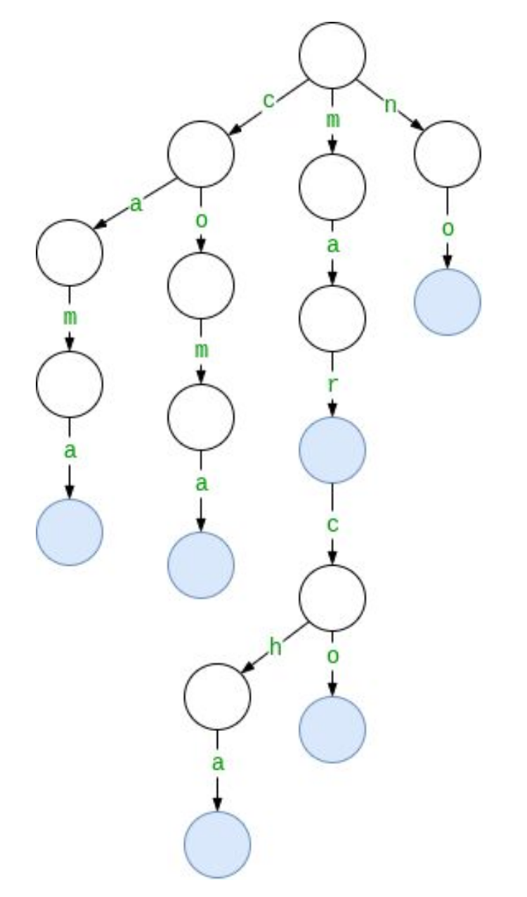
Ejemplo de trie para el diccionario "cama", "coma", "mar", "marco", "marcha" y "no"
struct trie {
map<char, trie> hijos;
bool term = false;
void insertar(string const& s, int pos = 0) {
char c = s[pos];
if (pos < int(s.size())) hijos[c].insertar(s, pos+1);
else term = true;
}
bool buscar(string const& s, int pos = 0) {
char c = s[pos];
if (pos < int(s.size())) return hijos.count(c) && hijos[c].buscar(s, pos+1);
else return term;
}
};
Complejidad construccion:
Complejidad consulta:
Complejidad actualizacion:
Hashes
Sea un alfabeto con caracteres. Si le asociamos a cada el valor (como por ejemplo, su valor ASCII), podemos representar a cada string como el polinomio:
donde es una base impar suficientemente grande (), todas las operaciones se realizan utilizando uint64_t y, naturalmente el overflow implementa el modulo . Asi, cada string tendra asociado un numero "unico" al cual llamamos su hash.
Especialmente eficiente para:
- Contar ocurrencias de un string en otro
- Comparaciones lexicograficas de strings
struct StrHash {
using ull = unsigned long long;
ull base;
vector<ull> h, p;
StrHash(const string& s) {
int n = s.size();
// base aleatoria impar
base = chrono::steady_clock::now().time_since_epoch().count() | 1;
h.assign(n+1, 0);
p.assign(n+1, 1);
for (int i = 0; i < n; ++i) {
h[i+1] = h[i] * base + (unsigned char)s[i];
p[i+1] = p[i] * base;
}
}
// hash de s[l, r)
ull get(int l, int len) const {
return h[l+len] - h[l] * p[len];
}
};
Inicializacion:
string s = "hello world";
StrHash hs(s);
auto h1 = hs.get(0, 5); // "hello"
auto h2 = hs.get(6, 5); // "world"
Complejidad construccion:
Complejidad consulta:
Z Function
Dado un string , definimos el arreglo tal que es la longitud del prefijo mas largo de que a su vez empieza en el indice . Asi, si , entonces
Especialmente eficiente para:
- Deteccion de patrones en strings (pattern matching): s = preffix#string
- Comparaciones de prefijos con sufijos
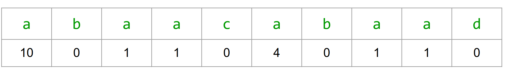
Ejemplo de del arreglo para el string "abaacabaad"
// Retorna un vector `z` tal que `z[i]` es la longitud del prefijo mas largo del
// string `s` que a su vez empieza en el indice `i`.
vector<int> z_function(string const& s) {
int n = int(size(s));
vector<int> z(n);
z[0] = n;
int l = 0, r = 0;
forr(i, 1, n) {
if (i <= r) { z[i] = min(r-i+1, z[i-l]); }
while (i+z[i] < n && s[z[i]] == s[i+z[i]]) { ++z[i]; }
if (i+z[i]-1 > r) { l = i, r = i+z[i]-1; }
}
return z;
}
Complejidad construccion:
Complejidad consulta:
Deques
Es como un vector pero se pueden insertar y eliminar elementos por delante y por detras en .
Inicializacion:
deque<int> dq;
Funciones (particulares):
dq.push_front(): Insertar un elemento al comienzo
dq.pop_front(): Eliminar el primer elemento
Suelen ser ligeramente mas lentos que los vectores pero en promedio la insercion y la eliminacion son
Stacks
En las competencias ICPC conviene utilizar un vector en vez de un stack debido a que tiene mas flexibilidad.
Queues
Simula una cola/fila. Tiene un comportamiento FIFO (First In, First Out).
Resulta util cuando queremos agregar cosas para procesarlas luego en un orden FIFO
Es preferible antes que un set
Inserciones, eliminaciones y accesos
Inicializacion:
queue<int> q;
Funciones:
q.push(): // q.push(5); q.push(3); q.push(-1);
q.front(): // 5
q.pop(): // chau 5
q.front(): // 3
q.back(): // -1
Priority Queues
Como una queue normal, pero ordena internamente los elementos de mayor a menor.
Inicializacion:
priority_queue<int> PQ;
priority_queue<int, vector<int>, greater<int>> PQ; // cola de prioridades inversa (ordena de menor a mayor)
Funciones:
PQ.push(): // PQ.push(5); PQ.push(10); PQ.push(7);
PQ.top(): // 10
PQ.pop(): // chau 10
Ojo! insertar y remover elementos aqui es
Sets
Es una coleccion ordenada de menor a mayor de elementos unicos.
Inicializacion:
set<int> s;
set<int> s = {2,5,6,8}; // set con valores arbitrarios
Funciones:
s.insert(): // S.insert(5); S.insert(10); S.insert(5); no da error, pero el elemento no se agrega
s.size(): // 2
s.erase(): // S.erase(5); chau 5
s.count(5): // 0; puede ser solo 0 o 1
s.find(x): // puntero (iterador) al elemento x o end si x no se encuentra en s
s.lower_bound(x): // puntero (iterador) al primer elemento >= x o end en caso contrario
s.upper_bound(x): // puntero (iterador) al primer elemento > x o end en caso contrario
Operaciones:
- union
set1.insert(set2.begin(), set2.end());
Complejidad:
- interseccion
set_intersection(A.begin(), A.end(), B.begin(), B.end(), inserter(A∩B, A∩B.begin()));
Complejidad:
- diferencia
set_difference(A.begin(), A.end(), B.begin(), B.end(), inserter(A/B, A/B.begin()));
Complejidad:
Como iterar un set:
for (auto it = s.begin(); it != s.end(); it++) {
cout << *it << "\n";
}
Se maneja internamente con punteros
Es mas costoso de insertar () que un vector pero es mas rapido de buscar ()
Iterar el set es . No se puede indexar como un arreglo o vector
La gran mayoria de sus operaciones son
Considerar utilizar bitsets si se requiere de poca memoria
Multisets
Es como un set, pero permite meter mas de una vez un elemento.
Inicializacion:
multiset<int> MS;
Funciones:
MS.insert(): // MS.insert(3); MS.insert(3);
MS.erase(): // MS.erase(3); OJO: esto borra todas las repeticiones!
MS.size(): // 0. MS.insert(10); MS.insert(10); MS.erase(MS.find(10)); MS.size(); // 1
Indexed Sets
Es como un set, pero podemos utilizar funciones adicionales.
Como un indexed set es una policy-based data structure, debemos agregar lo siguiente para poder utilizarlo para numeros enteros:
#include <ext/pb_ds/assoc_container.hpp>
using namespace __gnu_pbds;
typedef tree<int,null_type,less<int>,rb_tree_tag,
tree_order_statistics_node_update> indexed_set;
Inicializacion:
indexed_set is;
Funciones (particulares):
is.find_by_order(i): Devuelve un puntero (iterador) al elemento i-esimo
is.order_of_key(x): Devuelve la posicion en la que deberia estar x; No hace falta que x pertenezca al set
La complejidad de estas funciones es
Bitmask Sets
La idea se basa en utilizar numeros enteros como conjuntos.
Inicializacion:
int x = 0;
x |= (1<<1);
x |= (1<<3);
x |= (1<<4);
x |= (1<<8);
// x = {1, 3, 4, 8}
Funciones:
Interseccion: x & y;
Union: x | y;
Complemento: ~x;
Diferencia: x & ~(y);
Como iterar un bitmask set:
for (int i = 0; i < 32; i++) {
if (x&(1<<i))
cout << i << " ";
}
Como iterar subsets:
- Desde {0, 1, ... , n − 1}:
for (int b = 0; b < (1<<n); b++) {
// process subset b
}
- Subsets de longitud fija
k:
for (int b = 0; b < (1<<n); b++) {
if (__builtin_popcount(b) == k) {
// process subset b
}
}
- Subsets de un bitmask set
x:
int b = 0;
do {
// process subset b
} while (b=(b-x)&x);
NOTA:
- Este tipo de conjuntos solamente puede almacenar hasta 64 elementos (utilizando long long)
Disjoint Set Union
Un DSU mantiene una coleccion de conjuntos disjuntos. Cada conjunto tiene un elemento representativo y una cadena que une a cualquier elemento con el representativo.
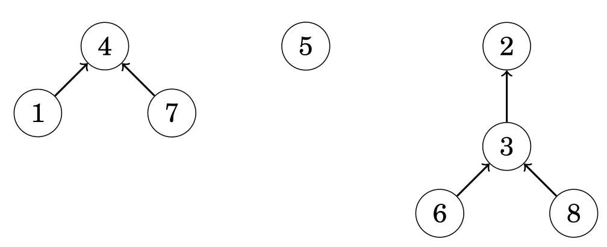
Representacion grafica de los sets {1, 4, 7}, {5} y {2, 3, 6, 8}
Especialmente eficiente para:
- Ver si dos nodos pertenecen a la misma componente
Inicializacion:
El arreglo lk (link) indica, para cada elemento, el siguiente elemento en la cadena o el mismo elemento si este es representativo. El arreglo len indica el tamaño de cada conjunto para cada elemento representativo. Inicialmente, cada conjunto contiene solo un elemento.
int lk[MAXN], len[MAXN];
for (int i = 0; i < n; i++) lk[i] = i;
for (int i = 0; i < n; i++) len[i] = 1;
Funciones:
- find: Retorna el representativo para un elemento
x
int find(int x) {
if(x == lk[x]) return x;
return lk[x] = find(lk[x]);
}
Complejidad:
- same: Devuelve true si los elementos
xeypertenecen al mismo conjunto. Decimos que dos elementos pertenecen al mismo conjunto si y solo si sus representativos son los mismos
PRECONDICION: x e y deben pertenecer a diferentes sets
bool same(int x, int y) {
return find(x) == find(y);
}
Complejidad:
- unite: Une el set mas chico de los elementos
xeyal mas grande
void unite(int x, int y) {
int a = find(x);
int b = find(y);
if (len[a] < len[b]) swap(a,b);
len[a] += len[b];
lk[b] = a;
}
Complejidad:
Maps
Es como un arreglo de pares clave-valor, pero lo podes indexar con la estructura que quieras y ordena los indices de mayor a menor.
Inicializacion:
map<int, string> M; // mapea de tipo `int` a tipo `string`
Funciones:
M[5] = “V”; // asociamos el 5 con la string “V”
M.size(); // 1
M[7] = “VII”; // asociamos el 7 con la string “VII”
M.size(); // 2. if (M[10] == “X”) { … } OJO: este patron agrega el elemento 10
// if (M.count(3) > 0 && M[3] == “III”) { … } este patron si funciona como esperamos
Como iterar un map:
for (auto [key, value] : m) {
cout << key << ": " << value;
}
Unordered Sets & Unordered Maps
Como set y map, pero sus elementos no estan ordenados.
Muchas operaciones pasan a ser (en promedio) en vez de
Diferencias
Operaciones en Unordered Sets
- union
uset1.insert(uset2.begin(), uset2.end());
Complejidad: caso promedio, caso peor (colisiones de hash extremas)
- interseccion
for (int x : A) {
if (B.count(x)) {
A∩B.insert(x);
}
}
Complejidad: caso promedio, caso peor (colisiones de hash extremas)
- diferencia
for (int x : A) {
if (!B.count(x)) {
A/B.insert(x);
}
}
Complejidad: caso promedio, caso peor (colisiones de hash extremas)
Iteradores
Es una variable que a punta a un elemento en una estructura de datos. Los iteradores begin y end definen el rango que contiene todos los elementos de una estructura de datos.
- begin: Apunta al primer elemento.
- end: Apunta a la posicion siguiente del ultimo elemento (OJO! No se puede desreferenciar ya que la posicion es invalida).
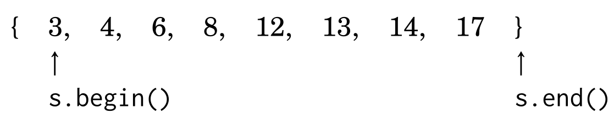
Los iteradores pueden irse moviendo (de a un elemento) en la estructura por medio de
++y--
Tambien se pueden utilizar los iteradores rbegin y rend que apuntan al ultimo elemento y a la posicion anterior al primer elemento respectivamente
Fenwick Tree
Especialmente eficiente para:
- Responder consultas de rango o subintervalos donde se aplican operaciones de prefijos (como la suma, el producto, AND, OR, XOR, MCD, MCM, etc.)
int tree[MAXN] = {};
void constructBITree(int arr[], int n)
{
for (int i=0; i<n; i++)
add(i, arr[i]);
//for (int i=1; i<=n; i++)
// cout << tree[i] << " ";
}
void add(int k, int x) {
while (k <= n) {
tree[k] += x;
k += k&-k;
}
}
int sum(int k) {
int s = 0;
while (k >= 1) {
s += tree[k];
k -= k&-k;
}
return s;
}
Toda consulta de rango puede resolverse de la siguiente manera:
Complejidad construccion:
Complejidad consulta:
Complejidad actualizacion:
NOTA:
- A pesar de ser una estructura de arbol binario, utilizamos un arreglo para implementarlo
Segment Tree
Es un arreglo que responde tanto consultas de operaciones de prefijos sobre rangos (suma, producto, AND, OR, XOR, MCD, MCM, etc.) como consultas sobre minimos y maximos de rangos.
Espcialmente eficiente para:
- Modificar y consultar/buscar valores
- Responder consultas (querys) sobre subintervalos
Proceso de creacion:
- Dado un arreglo
AconNelementos, extenderAcon "elementos neutros" (sule ser 0 generalmente) hasta que tenga tamaño potencia de 2. - Crear un arbol binario completo cuyas hojas sean los elementos de A.
Luego, cada hoja representa el rango [i, i + 1), y los nodos internos representan la union de los rangos de los hijos.

Este segment tree esta orientado a responder querys relacionadas con la suma de los subarreglos
int n, t[2*MAXN];
void buildst(int a[]) {
forn(i,n) t[n+i] = a[i];
for (int i = n-1; i > 0; i--)
t[i] = t[2*i] + t[2*i+1];
}
Los nodos se almacenan desde abajo hacia arriba. Por ejemplo, el segment tree
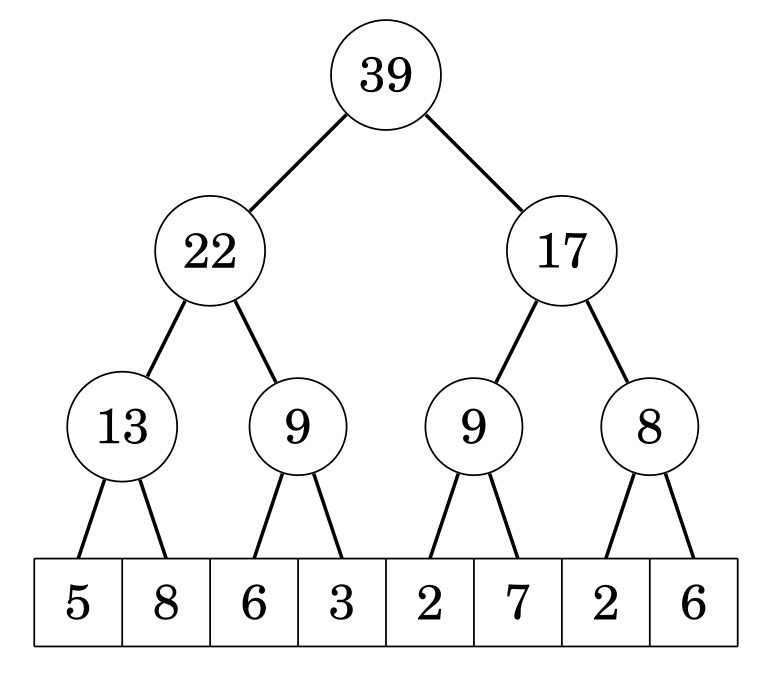
se guarda como:
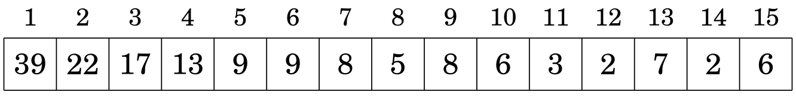
Usando esta representacion, el padre del nodo
tree[k]estree[floor(k/2)], y sus hijos sontree[2k]andtree[2k+1]. Notar que esto implica que la posicion de un nodo es par si es un hijo izquierdo e impar si es un hijo derecho
Actualizacion:
- Actualizo el valor del nodo actual.
- Actualizo todos los nodos internos hasta llegar a la raiz.
void updatest(int k, int x) { // posicion del elemento a actualizar en A, nuevo valor
k += n;
t[k] += x;
for (k /= 2; k >= 1; k /= 2) {
t[k] = t[2*k] + t[2*k+1];
}
}
kdebe estar indexado desde 0
Responder query:
En cada paso, el rango se desplaza un nivel mas arriba en el arbol, y antes se añaden a la suma los valores de los nodos que no pertenecen al rango superior.
int sumst(int l, int r) { // indice izquiero del subarbol, indice derecho del subarbol
l += n; r += n;
int s = 0;
while (l <= r) {
if (l%2 == 1) s += t[l++];
if (r%2 == 0) s += t[r--];
l /= 2; r /= 2;
}
return s;
}
lyrdeben estar indexados desde 0
Complejidad construccion:
Complejidad consulta:
Complejidad actualizacion individual:
NOTAS:
- A pesar de ser una estructura de arbol binario, utilizamos un arreglo de tamaño para implementarlo, donde son los elementos neutros agregados para lograr que sea potencia de
- Si bien es una estructura mas general que un fenwick tree, requiere mas memoria y es un poco mas dificil de implementar
Lazy Segment Tree
Es como un segment tree, pero soporta actualizaciones de rango en a costa de ocupar mas memoria.
void updateRange(int node, int start, int end, int l, int r, long long val) {
if (lazy[node] != 0) {
tree[node] += (end - start + 1) * lazy[node];
if (start != end) {
lazy[node*2] += lazy[node];
lazy[node*2 + 1] += lazy[node];
}
lazy[node] = 0;
}
if (start > r || end < l)
return;
if (start >= l && end <= r) {
tree[node] += (end - start + 1) * val;
if (start != end) {
lazy[node*2] += val;
lazy[node*2 + 1] += val;
}
return;
}
int mid = (start + end) / 2;
updateRange(node*2, start, mid, l, r, val);
updateRange(node*2 + 1, mid+1, end, l, r, val);
tree[node] = tree[node*2] + tree[node*2 + 1];
}
long long sumst(int node, int start, int end, int l, int r) {
if (lazy[node] != 0) {
tree[node] += (end - start + 1) * lazy[node];
if (start != end) {
lazy[node*2] += lazy[node];
lazy[node*2 + 1] += lazy[node];
}
lazy[node] = 0;
}
if (start > r || end < l)
return 0;
if (start >= l && end <= r)
return tree[node];
int mid = (start + end) / 2;
return sumst(node*2, start, mid, l, r) +
sumst(node*2 + 1, mid+1, end, l, r);
}
lyrdeben estar indexados desde 0
Complejidad construccion:
Complejidad consulta:
Complejidad actualizacion en rango:
NOTAS:
lazyes un arreglo de tamaño que lleva el registro del valor de la actualizacion lazy de cada nodo. Se inicializa en- Se construye del mismo modo que el segment tree comun
Matematicas
Progresiones
Sumas Gaussianas
- Sum(n) -> (n*(n+1))/2
- Sum(n-1) -> (n*(n-1))/2
Formula de Faulhaber (hasta 6)
Progresion Aritmetica
Donde a es el primer numero, b el ultimo y n la cantidad total de numeros.
NOTA:
- La formula es independiente de la constante de separacion entre los Vdos
Progresion Geometrica
Donde a es el primer numero, b el ultimo y k es el radio entre los sumandos.
Algebra
Enteros vs Flotantes
| Enteros | Flotantes |
|---|---|
int hasta 2*10^9 |
float hasta 6 digitos (NO usar) |
long long hasta 4*10^18 |
double hasta 15 digitos |
| >= usar STRINGS | long double hasta 18 digitos |
Raices
Flotantes
- sqrt(x) -> si x es Double
- sqrtl(x) -> si x es Long Double
Enteros
int raiz(int x) {
int l = 0, r = x+1;
while (R - L > 1) {
int m = (l + r) / 2;
if (m*m <= x) l = m;
else r = m;
}
return l;
}
Complejidad:
NOTA:
- Utiliza busqueda lineal y devuelve el piso de la raiz
Exponenciacion
Flotantes
- pow(x, e) -> si x es Double
- powl(x, e) -> si x es Long Double
NOTA:
- SE QUEDA CORTO EN PRECISION PARA ICPC
Enteros
ll pot(ll x, int n) {
if (n == 1) return x;
if (n % 2 == 0) return pot(x*x, n/2);
return x * pot(x, n - 1);
}
Complejidad:
Formula de Binet
Calcula el n-esimo numero de la sucesion de Fibonacci.
NOTA:
- El resultado debe estar en punto flotante
Gauss
double reduce(vector<vector<double>> &a){ //Devuelve determinante si m == n
int m = sz(a), n = sz(a[0]);
int i = 0, j = 0;
double r = 1.0;
while(i < m and j < n){
int h = i;
forr(k, i+1, m) if(abs(a[k][j]) > abs(a[h][j])) h = k;
if(abs(a[h][j]) < EPS){
j ++;
r = 0.0;
continue;
}
if(h != i){
r = -r;
swap(a[i], a[h]);
}
r *= a[i][j];
dforr(k, j, n) a[i][k] /= a[i][j];
forr(k, 0, m){
if(k == i) continue;
dforr(l_, j, n) a[k][l_] -= a[k][j] * a[i][l_];
}
i ++; j ++;
}
return r;
}
Complejidad:
NOTA:
- La version con aritmetica modular solo funciona si el modulo es primo
Geometria
Representacion
Punto
- Version Entera
struct pto {
ll x, y;
pto() : x(0), y(0) {}
pto(ll _x, ll _y) : x(_x), y(_y) {}
pto operator+(const pto b) const { return pto(x+b.x, y+b.y); }
pto operator-(const pto b) const { return pto(x-b.x, y-b.y); }
pto operator+(ll k) const { return pto(x+k, y+k); }
pto operator*(ll k) const { return pto(x*k, y*k); }
pto operator/(ll k) const { return pto(x/k, y/k); }
ll operator*(const pto b) const { return x*b.x + y*b.y; }
pto proj(const pto b) const { return b*((*this)*b) / (b*b); }
ll operator^(const pto b) const { return x*b.y - y*b.x; } // Producto Vectorial - Producto Cruz
ll norm2() const { return x*x + y*y; }
ll dist2(const pto b) const { return (b - (*this)).norm2(); }
};
- Version Punto Flotante
struct ptoD {
ld x, y;
ptoD() : x(0), y(0) {}
ptoD(ld _x, ld _y) : x(_x), y(_y) {}
ptoD(const pto& p) : x(p.x), y(p.y) {} // Conversion desde entero
ptoD operator+(const ptoD& b) const { return {x+b.x, y+b.y}; }
ptoD operator-(const ptoD& b) const { return {x-b.x, y-b.y}; }
ptoD operator*(ld k) const { return {x*k, y*k}; }
ld operator*(const ptoD& b) const { return x*b.x + y*b.y; }
ld operator^(const ptoD& b) const { return x*b.y - y*b.x; } // Producto Vectorial - Producto Cruz
ld norm() const { return sqrt(x*x + y*y); }
ld dist(const ptoD& b) const { return (b - *this).norm(); }
ld arg() const { return atan2(y, x); }
ptoD rotate(ld a) const { return {x*cos(a) - y*sin(a), x*sin(a) + y*cos(a)}; }
static ptoD polar(ld r, ld a) { return {r*cos(a), r*sin(a)}; }
};
Vector
struct vec {
int x, y;
}
Recta
struct recta {
pto p, pq;
constructor(pto p, pto q) {
this.p = p;
this.pq.x = q.x - p.x;
this.pq.y = q.y - p.y;
}
}
Se representa por un punto origen y un vector tangente
Poligono
pto PolygonA[n]; //estatica
vector<pto> PolygonB; // dinamica
Se representa por una lista ordenada de puntos
Algebra Vectorial
Suma y Resta de Vectores
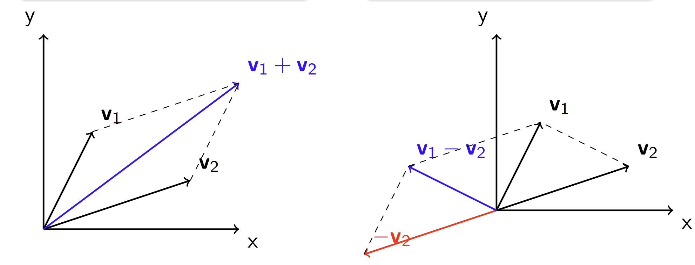
El valor absoluto de la diferencia de vectores nos permite calcular la distancia entre dos puntos!
Multiplacion y Division por Escalares
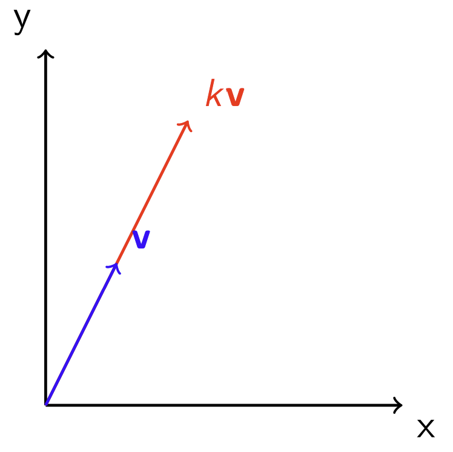
Podemos alterar el tamaño de un vector por medio de multiplicarlo o dividirlo por un valor k respectivamente.
Norma
Es el largo o la extension de un vector U en el espacio.
ld Ux, Uy; // Vector U
ld norma = abs(sqrtl(Ux*Ux + Uy*Uy));
Complejidad:
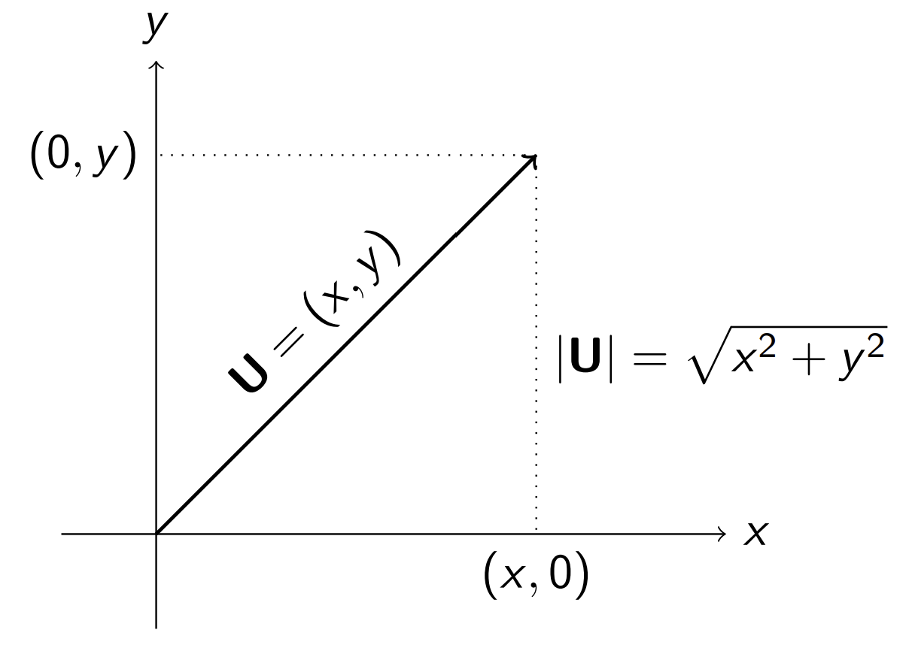
Proyeccion
Proyeccion de un vector U sobre un vector V:
ld Ux, Uy; // Vector U
ld Vx, Vy; // Vector V
ld proyeccionUV = (Vx + Vy)*((Ux*Vx + Uy*Vy)/abs(sqrtl(Ux*Ux + Uy*Uy)));
Complejidad:
- Podemos interpretarla como la proyeccion ortogonal del vector U sobre la linea que contiene alvector V:
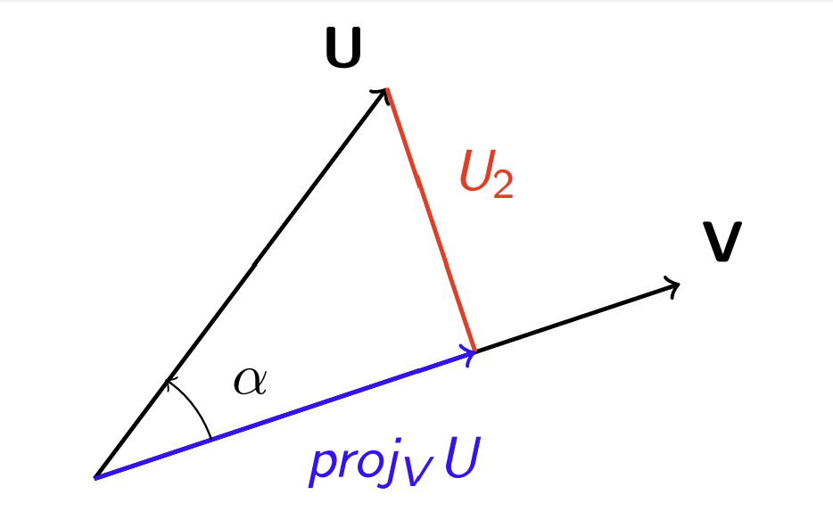
- Dado un punto P y una linea/segmento L, podemos encontrar el punto en L mas cercano a P si calculamo la proyeccion de P sobre L.
Producto Punto
- Dos vectores son perpendiculares <=> su producto escalar es 0
int Ux, Uy; // Vector U
int Vx, Vy; // Vector V
int escalar = Ux*Vx + Uy*Vy;
Complejidad:
- Podemos interpretar el producto punto entre una direccion U y un punto V, como una medida de ”que tan lejos esta el punto V en la direccion U”:
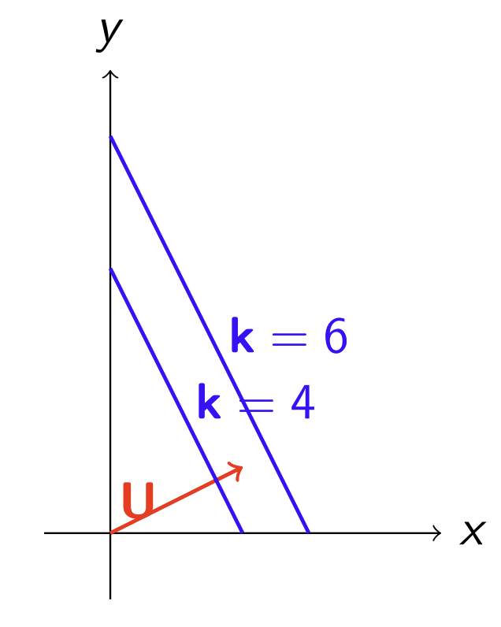
- Por teorema, el producto punto entre dos vectores alcanza un maximo cuando U y V tienen igual direccion (cos(α) = 1) y un minimo cuando tienene direccion opuesta (cos(α) = -1)
Producto Cruz
- Dos vectores son paralelos <=> el valor absoluto de su producto vectorial es 0.
- Dados los vectores y , el signo del producto cruz nos indica que apunta hacia la izquierda cuando se coloca despues de (signo positivo) o que apunta hacia la derecha cuando se coloca despues de (signo negativo).
- Dados un punto y una linea formada por los puntos y , el producto cruz nos indica cuando esta a la izquierda de la linea (valor positivo), a la derecha de la linea (valor negativo) o sobre la linea (valor nulo).
int Ux, Uy; // Vector U
int Vx, Vy; // Vector V
int vectorial = Ux*Vy - Uy*Vx;
Complejidad:
- El producto vectorial es igual al area del paralelogramo formado por los vectores
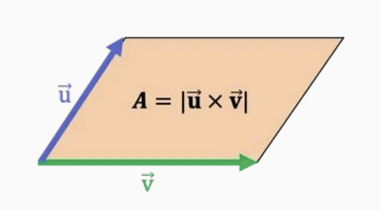
Algoritmos
Calculo de Perimetro
double dist(pto A, pto B) {
double dx = A.x - B.x
double dy = A.y - B.y;
return hypot(dx, dy);
}
// ...
vector<pto> Poly(n);
double per = 0;
for (int i = 0; i < n-1; i++) {
per += dist(Poly[i], Poly[i+1]);
}
per += dist(Poly[n-1], Poly[0]);
Complejidad:
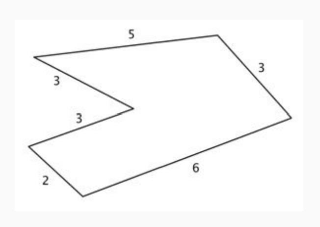
Calculo de Area
- Un poligono se puede separar en triangulos. Luego se puede calcular el area como suma de muchas areas pequeñas.
vector<pto> Poly(n);
double area = 0;
for (int i = 0; i < n; i++) {
int j = (i + 1) % n;
area += Poly[i].x * Poly[j].y - Poly[j].x * Poly[i].y;
}
area = abs(area) / 2.0;
Complejidad:
Polar Sort
Dado un punto O y un vector V, el polar sort de un conjunto de puntos S es el ordenamiento de los puntos de S, en sentido antihorario, tomando a O como centro y V como direccion inicial.
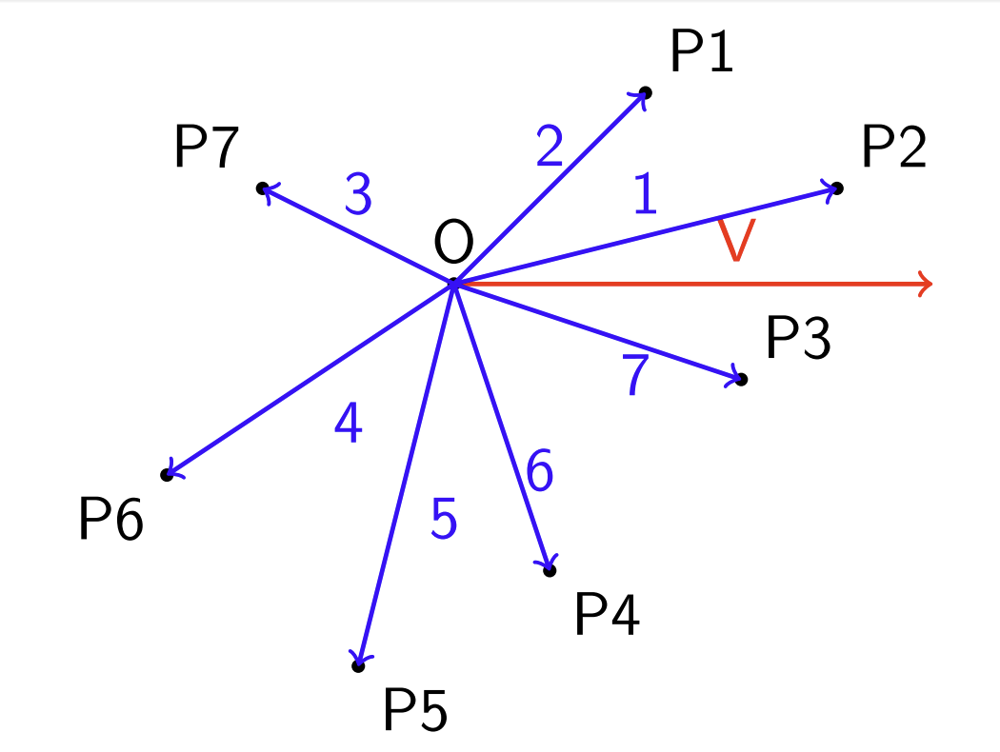
struct cmp {
pto o, v;
cmp(pto no, pto nv) : o(no), v(nv) {}
bool half(pto p) {
assert(!(p.x == 0 && p.y == 0)); // (0,0) isn't well defined
return (v ^ p) < 0 || ((v ^ p) == 0 && (v * p) < 0);
}
bool operator()(pto& p1, pto& p2) {
return mp(half(p1 - o), T(0)) < mp(half(p2 - o), ((p1 - o) ^ (p2 - o)))
}
};
Complejidad:
Convex Hull
El convex hull de un conjunto de puntos S es el conjunto convexo[1] minimo que contiene a S.
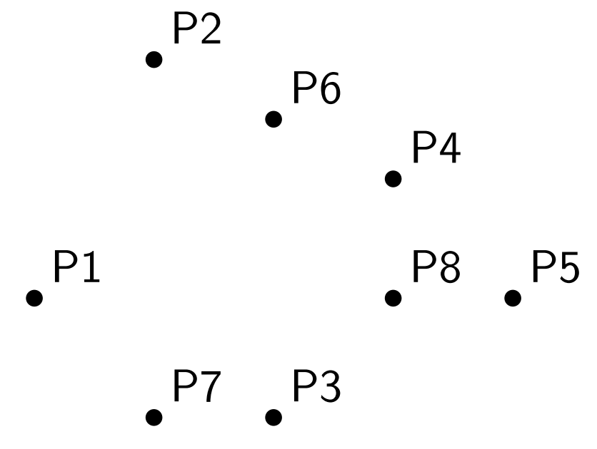
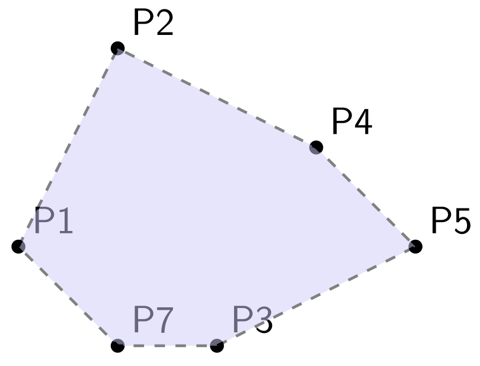
vector<pto> convex_hull(vector<pto>& p) {
sort(p.begin(), p.end());
vector<pto> h;
// lower hull
for(auto pt : p) {
while(h.size() >= 2 &&
(h.back() - h[h.size()-2]) ^
(pt - h[h.size()-2]) < 0)
h.pop_back();
h.push_back(pt);
}
int t = h.size() + 1;
// upper hull
for(int i = p.size()-2; i >= 0; i--) {
while(h.size() >= t &&
(h.back() - h[h.size()-2]) ^
(p[i] - h[h.size()-2]) < 0)
h.pop_back();
h.push_back(p[i]);
}
h.pop_back();
return h;
}
Complejidad:
NOTA:
- Esta implementacion contempla los puntos colineales. Si desean ignorarse hay que cambiar los
>,<por>=,<=
Algoritmos Sweep Line
La idea de este tipo de algoritmos es representar una instancia del problema como un conjunto de eventos que se corresponden con puntos en el plano.
Ejemplo 1
Una compania cuenta con empleados, para los cuales se conocen sus horarios de llegada y salida. El objetivo es hallar el maximo numero de empleados presentes en la oficina concurrentemente.
Para resolver el problema, debemos modelar la situacion de forma de que a cada empleado le correspondan dos eventos (su hora de llegada y su hora de salida). La siguiente imagen muestra un ejemplo de entrada y su correspondiente modelizacion:
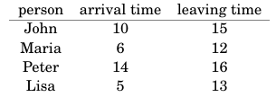
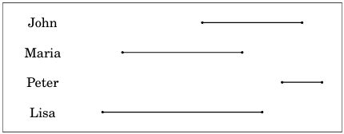
Tras ordenar los eventos en sentido no decreciente, vamos guardando un contador a medida que los recorremos el cual vamos incrementando si el evento es la llegada de un empleado y decrementando cuando el evento sea de salida. Finalmente, la solucion es el maximo valor alcanzado por el contador.
De este modo, podemos resolver el problema en .
Ejemplo 2
Dado un conjunto de puntos en el plano, queremos encontrar aquellos cuya distancia euclideana sea minima. Consideremos la siguiente imagen como un posible caso:
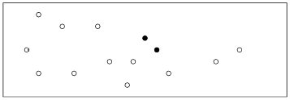
Se destacan en negro los puntos que conforman la solucion
Podemos resolver este problema si ordenamos los puntos en orden no decreciente en base al eje y mantenemos la minima distancia vista hasta el momento. Luego, para cada nuevo punto, si existe otro punto que minimice , este se encuentra contenido en la region delimitada por y . A modo de ilustacion, la siguiente imagen muestra el momento exacto en el que se llega a la solucion de este caso:
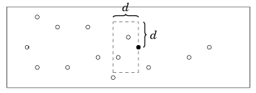
De esta manera, podemos pasar de resolver este problema comparando todos los puntos en a un complejidad de .
Combinatoria
Factoriales
Computo de factoriales
- Lo que se hace para calcular factoriales cuando ≤ 10^6 es precalcular los factoriales y guardarlos en un arreglo.
const int MAXN = 1e6, M = 1e9+7;
ll F[MAXN];
// ...
F[0] = 1;
for(ll i = 1; i < MAXN; i++) F[i] = F[i-1]*i %M;
Aqui M es un numero primo GRANDE
Complejidad:
Computo de Factoriales Inversos
-
Le llamamos “factorial inverso” de modulo , al inverso modular del factorial de modulo .
-
Cuando ≤ 10^6, es mas eficiente tener en cuenta que:
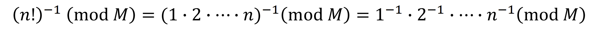
- Tras lo cual podemos precalcular los factoriales inversos en tiempo lineal:
const int MAXN = 1e6, M = 1e9+7;
ll F[MAXN], INV[MAXN], FI[MAXN];
// ...
F[0] = 1; forr(i, 1, MAXN) F[i] = F[i-1]*i %M;
INV[1] = 1; forr(i, 2, MAXN) INV[i] = M - (ll)(M/i)*INV[M%i]%M;
FI[0] = 1; forr(i, 1, MAXN) FI[i] = FI[i-1]*INV[i] %M;
Complejidad:
Permutaciones
Una permutacion es un arreglo que consta de enteros distintos de a ordenados arbitrariamente.
Si es una permutacion de longitud , decimos que es su inversa si se cumple que:
La inversa resulta util cuando queremos consultar en en que posicion se encuentra cada elemento de la permutacion identidad. Denotamos por a la permutacion identidad la cual cumple que:
Dada una permutacion de longitud , decimos que es un punto fijo de si .
Sean enteros distintos, decimos que el conjunto es un ciclo de con periodo si:
Podemos ver a las permutaciones como un grafo funcional[2] y luego calcular la cantidad de ciclos en utilizando DFS.
Por ejemplo, la permutacion [1,5,6,7,4,3,2] se representa graficamente de la siguiente forma:
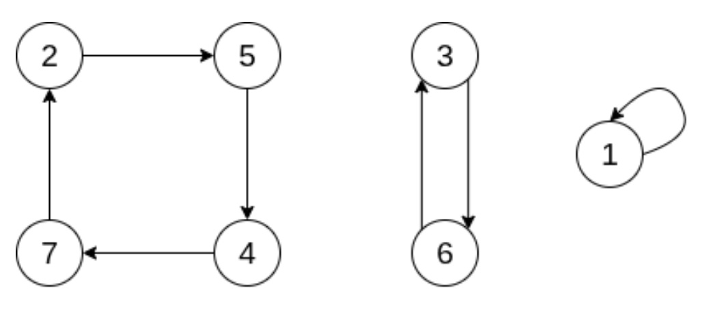
Dada una permutacion de longitud , definimos cambiar los valores de y para . Una permutacion swap cumple que todas sus posiciones son puntos fijos a excepcion de y , para .
Si y son permutaciones de longitud igual a , denotamos a su composicion como:
Teorema:
Sean permutaciones swap. Toda permutacion de longitud puede ser construida componiendo con . Es decir:
Dada una permutacion de longitud , denotamos:
Una inversion en una permutacion es un par tal que y .
Por ejemplo: para , es una inversion ya que y .
En una permutacion de largo , la minima cantidad de inversiones es 0 (en la identidad) y la maxima cantidad de inversiones es (en la reversa de la identidad). Todas las cantidades entre medio son conseguibles con alguna permutacion.
Esta definicion tambien aplica para arreglos con elementos repetidos
La paridad de una permutacion se define como la paridad de su cantidad de inversiones.
Lema:
Aplicar un hace que la cantidad de inversiones aumente o disminuya en exactamente uno. Es decir, cada vez que realizamos un , la paridad de la permutacion resultante cambia.
Como podemos interpretar a una permutacion como una composicion de swaps, se tiene que al componer dos permutaciones sus paridades se suman.
Vimos que podemos formar un ciclo de periodo con . Por lo tanto, se da que:
Un ciclo con periodo par una permutacion impar
Un ciclo con periodo impar una permutacion par
Aplicaciones
En lo que sigue, sera un permutacion de largo .
-
Minima Cantidad de Swaps para Llevar una Permutacion a la Identidad: sera igual a cuando todos sus ciclos tengan periodo . Dado un ciclo de largo , podemos hacer que cada sea un punto fijo en operaciones. Una forma simple y ordenada de hacerlo es haciendo las operaciones .
Complejidad: (contar ciclos)
-
Minimo tal que : Obsevar que para cada ciclo de , siempre vale que al hacer todas la posiciones del ciclo se convierten en puntos fijos. Aqui es el periodo del -esimo ciclo, donde cantidad de ciclos de . Por lo tanto, .
- Ojo! puede ser tan grande que no entre en
long long.
Complejidad: (contar ciclos)
- Ojo! puede ser tan grande que no entre en
-
Raiz Cuadrada de una Permutacion: Se nos pide dar una permutacion tal que . Veamos como cambian los ciclos de al hacer componerla consigo misma:
- Un ciclo par se convierte en dos ciclos y cada uno de periodo .
- Un ciclo impar se convierte en un ciclo de periodo .
Por lo tanto, para que dicha raiz exista es necesario que en haya una cantidad par de ciclos de periodo , siempre que sea par. Cuando se de esa condcicion, podemos construir reordenando los indices de los ciclos impares y juntando de a pares a los ciclos pares.
Complejidad: (contar ciclos)
-
Contar Inversiones/Minima Cantidad de Swaps Adyacentes: Comenzamos con los elementos de la permutacion . Los recorremos de izquierda a derecha y los vamos metiendo en un indexed set. Antes de insertar un nuevo elemento, contamos cuantos elementos mayores a el ya agregamos al set, sumamos eso a la respuesta y recien despues lo agregamos.
Notar que si , entonces existe tal que . Aplicando , disminuimos en la cantidad de inversiones. De esta forma, podemos hacer un algoritmo que transforme a en la permutacion identidad en operaciones.Complejidad:
-
Calcular Paridad: Supongamos que consta de ciclos cada uno con periodo . Como podemos llevar cada ciclo a la permutacion identidad en , tenemos que la paridad de se calcula como:
Complejidad: (contar ciclos)
-
Cantidad de Permutaciones con Exactamente Puntos Fijos de Largo : Comenzemos con el caso .
Denotemos por a tal cantidad. Notar que y . Podemos calcular recursivamente utilizando programacion dinamica. Si no tiene puntos fijos, , por lo que hay posibilidades para el valor . Luego, hay dos casos para :- Si , entonces los otros valores forman una permutacion. Hay formas en este caso.
- Si , entonces podemos renombrar a y los primeros valores forman una permutacion. Hay formas en este caso.
Asi, la recursion que obtenemos esta dada por:
Para , la cantidad de permutaciones esta dada por:
Complejidad:
-
Minima Descomposicion en Subsecuencias Decrecientes/Maxima Subsecuencia Creciente (LIS): Podemos descomponer una permutacion en la minima cantidad de subsecuencias decrecientes con un algoritmo greedy. La idea consiste en procesar los elementos de a uno y en cada paso agregar el elemento actual a la primera subsecuencia posible.
Por ejemplo: para , si seguimos el algoritmo anterior, nos quedan las subsecuencias en el siguiente orden: . En cada paso, debemos aplicar busqueda binaria sobre el menor valor de cada subsecuencia para saber a cual debemos añdirle el elemento que estemos procesando. Notar que por como itera el algoritmo, los menores elementos de las subsecuencias quedan ordenados de mayor a menor (asi tambien como los elementos de la propia subsecuencia), por lo que no hace falta utilizar una estructura que mantega ordenado los elementos.
Por teorema, tenemos que en toda permutacion siempre vale que el largo de la maxima subsecuencia creciente es igual a la cantidad de secuencias en la minima descomposicion en subsecuencias decrecientes. Por lo que el LIS sera igual a la cantidad de secuencias obtenidas tras correr el algoritmo greedy. Si queremos obtener los elementos que conforman la subsecuencia, debemos modificar el algoritmo para que agregue una arista dirigida entre el elemento que se esta procesando y el ultimo elemento agregado a la subsecuencia anterior, creando asi un DAG (Observar que no hay aristas que salen de la primer subsecuencia). Luego, la maxima subsecuencia creciente estara dada por los nodos presentes en el camino que parte desde algun elemento de la ultima subsecuencia hasta su raiz.Complejidad:
Principio de Inclusion Exclusion
El principio de inclusion-exclusion es un importante metodo combinatorio para calcular el tamaño de un conjunto o la probabilidad de sucesos complejos. Relaciona el tamaño de conjuntos individuales con su union.
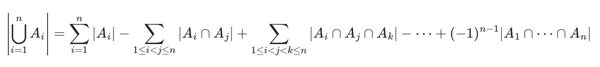
int inclusion_exclusion_general(int n, function<int(int)> f) {
int total = 0;
for (int mask = 1; mask < (1 << n); ++mask) {
int sign = (__builtin_popcount(mask) % 2 == 1 ? +1 : -1);
total += sign * f(mask);
}
return total;
}
Complejidad
NOTA:
- Aqui
f(mask)representa cuantos elementos cumplen las propiedades enmask
Ejemplo
Se nos pide calcular cuantos de los primeros 100 numeros naturales son divisbles por 2,3 y 5 (3 propiedaes). En este caso, f es como sigue:
int f(int mask) {
vector<int> primes = {2, 3, 5};
int mcm = 1;
forn(i, 3) if (mask & (1 << i))
mcm = lcm(mcm, primes[i]);
return 100 / mcm;
}
cout << inclusion_exclusion_general(3, f) << endl;
Coeficiente Binomial
El coeficiente binomial representa el numero de formas en la que podemos elegir un subconjunto (sin importar el orden) de elementos de un conjunto de elementos.
Formula recursiva:
Aqui los casos bases son .
Formula cerrada:
Propiedades
Coeficiente Multinomial
El coeficiente multinomial
representa el numero de formas en la que podemos dividir un conjunto de elementos en subconjuntos de tamaños , tales que .
Numeros de Catalan
El numero de Catalan representa el numero de expresiones con parentesis validas que consisten de parentesis que cierran y parentesis que abren.
Formula recursiva:
Aqui el caso base es .
Formula cerrada:
Propiedades
- Una expresion de parentesis vacia es valida.
- Si una expresion es valida, entonces la expresion tambien es valida.
- Si las expresiones y son validas, entonces la expresion tambien es valida.
Usos
- Contar arboles binarios: hay arboles binarios con exactamente nodos.
- Contar arboles enraizados: hay arboles binarios con exactamente nodos.
Lema de Burnside
El lema de Burnside se puede utilizar para contar el numero de combinaciones, de modo que
solo se cuente un representante por cada grupo de combinaciones simetricas. Tal lema establece que:
donde hay formas de cambiar la posicion de una combinacion, y hay combinaciones que permanecen sin cambios cuando se aplica la k-esima forma.
Ejemplo
Se nos pide calcular el numero de collares distintos de perlas, donde cada perla tiene colores posibles. Decimos que dos collares son identicos cuando uno sea igual al otro despues de rotarlos.
Hay rotaciones distintas para cada collar.
Cuando el numero de pasos es , un total de siguen siendo identicos. La razon de esto es que los bloques de perlas de tamaño se reemplazaran entre si.
Asi, el lema de Burnside nos dice que el numero de collares distintos es
Probabilidad
Una probabilidad es un numero real entre 0 y 1 que indica que tan probable es un evento. Cuando se sabe que un evento va a pasar, su probabilidad es 1, y cuando se sabe que es imposible que ocurra, su probabilidad es 0.
Un evento es un conjunto , donde es el universo y contiene todos los posibles resultados.
Podemos calcular un evento dado mediante la formula:
o mediante la simulacion del proceso que genera el evento. Por ejemplo: En una baraja de poker, la probabilidad de sacar tres cartas del mismo palo se puede calcular como:
Operaciones
-
Complemento: Dado un evento , su complemento es el evento "No ocurre ". Se calcula como:
-
Probabilidad Condicional: Dados los eventos y , la probabilidad condicional es la probabilidad de que ocurra asumiendo que sucede . Se calcula como:
-
Interseccion: Dados los eventos y , su intereseccion es el evento "Ocurren y ". Se puede calcular como:
o en base a la union:
Decimos que dos eventos y son independietes si
-
Union: Dados los eventos y , su union es el evento "Ocurren o ". Se calcula como:
Notar que si dos eventos y son disjuntos, .
Variables Aleatorias
Una variable aleatoria es un valor generado por un proceso o experimento de caracteristicas aleatorias.
Siempre consideramos variables aleatorias con numeros discretos (i.e. que no consideraremos las variables aleatorias continuas).
Esperanza
Dada una variable aleatoria , su esperanza denota al valor esperado de X. Se calcula como:
double expected_value(const vector<double>& x, const vector<double>& p)
{
double E = 0.0;
int n = x.size();
for (int i = 0; i < n; i++) {
E += x[i] * p[i];
}
return E;
}
Complejidad:
Varianza
Dada una variable aleatoria , su varianza es una medida de que tan dispersos estan los valores de la variable con respecto a su esperanza. Se calcula como:
double variance(const vector<double>& x, const vector<double>& p)
{
double EX = 0.0, EX2 = 0.0;
int n = x.size();
for (int i = 0; i < n; i++) {
EX += x[i] * p[i];
EX2 += x[i] * x[i] * p[i];
}
return EX2 - EX * EX;
}
Complejidad:
Distribuciones
La distribucion de una variable aleatoria muestra la probabilidad que cada posible valor de debe tener.
Uniforme
En esta distribucion tiene posibles valores en el intervalo y la probabilidad de cada uno de ellos es .
Binomial
En esta distribucion se realizan intentos cada uno con probabilidad . La variable cuenta el numero de exitos y la probabilidad de un valor es .
Geometrica
En esta distribucion la probabilidad de que un intento tenga exito es y se continua hasta que el primer exito suceda. La variable cuenta el numero de intentos necesarios hasta que ocurre el primer exito y la probabilidad de un valor es .
Cadenas de Markov
Una cadena de Markov es un proceso aleatorio que consiste de estados y transiciones entre ellos, donde para cada estado se conocen las probabilidades de moverse a otros estados. Generalmente se representa con un grafo donde los nodos son los estados y las aristas las transiciones.

Notar que estando en el estado 1, solo puedo ir al estado 2 y que estando en el estado 5, solo puedo ir al estado 4.
Metodo 1
Podemos resolver el ejemplo de arriba con programacion dinamica mediante la siguiente transicion de estados:
vector<double> cur(n + 1, 0.0), nxt(n + 1, 0.0);
cur[1] = 1.0;
for (int step = 1; step <= m; step++) {
fill(nxt.begin(), nxt.end(), 0.0);
for (int i = 1; i <= n; i++) {
if (cur[i] == 0.0) continue;
if (i == 1) {
nxt[2] += cur[i];
} else if (i == n) {
nxt[n - 1] += cur[i];
} else {
nxt[i - 1] += cur[i] * 0.5;
nxt[i + 1] += cur[i] * 0.5;
}
}
swap(cur, nxt);
}
Complejidad ESTE CASO:
Complejidad GENERAL:
Metodo 2
Otra forma es representar las transiciones con una matriz que actualice las probabilidades de distribucion. La matriz se veria asi:
Luego de pasos, podemos obtener el vector de probabilidades en el paso como .
vector<vector<ll>> build_transition(int n)
{
vector<vector<ll>> T(n, vector<ll>(n, 0));
ll inv2 = (MOD + 1) / 2;
T[1][0] = 1;
for(int j = 1; j <= n-2; j++){
T[j-1][j] = inv2;
T[j+1][j] = inv2;
}
T[n-2][n-1] = 1;
return T;
}
vector<ll> p0(n, 0);
p0[0] = 1;
vector<vector<ll>> T = build_transition(n);
vector<vector<ll>> Tm = mat_pow(T, m);
vector<ll> pm = multiply(Tm, p0);
Complejidad:
NOTA
- A diferencia del primer metodo, este metodo NO permite ver las distribuciones en los pasos intermedios.
Teoria de Numeros
Divisibilidad
Numeros Primos
- Un numero primo es aquel que tiene como unicos divisores el 1 y si mismo.
bool isPrime(int n) {
if (n < 2) return false;
for(int p = 2; p*p <= n; p++) {
if(n%p == 0) return false;
}
return true;
}
Complejidad:
Criba de Eratostenes
- La criba de eratostenes es una tabla que te indica si un numero es primo o no.
bitset isPrime[MAXN];
void criba() {
isPrime.set();
isPrime[0] = isPrime[1] = false;
for(int p = 2; p < MAXN; p++) {
if (isPrime[p]) {
for(int m = 2*p; m < MAXN; m += p) isPrime[m] = false;
}
}
}
Complejidad:
MCD y MCM
NOTA:
Para calcular el maximo comun divisor entre dos numeros podemos usar el algoritmo de euclides.
int mcd(int a, int b) {
if (b == 0) return a;
return mcd(b, a%b);
}
Complejidad:
Para calcular el minimo comun multiplo entre dos numeros usamos el MCD
int mcm(int a, int b) { return (a / mcd(a, b)) * b; }
Complejidad:
PROPIEDAD:
- mcd(a,b) = mcd (a,b+a*k) para cualquier k entero.
Divisores de un Numero
vector<int> Div;
void getDiv(int n) {
Div.clear();
for (int d = 1; d * d <= n; d++) {
if (n%d == 0) {
Div.push_back(d);
Div.push_back(n/d);
}
if (d*d == n) Div.pop_back();
}
// sort(Div.begin(), Div.end()); // OPCIONAL
}
Complejidad: ( si se ordena)
Factorizacion de un Numero
vector<pair<int, int>> F;
void fact(ll n) {
F.clear();
for (ll p = 2; p * p <= n; p++) {
int k = 0;
while (n%p == 0) {
k++;
n /= p;
}
F.pb({p,k});
}
if (n > 1) F.pb({n,1});
}
Complejidad:
Cantidad de Factores de un Numero
ll count_fact(){
ll res = 1;
for (int i = 0; i < F.size(); i++) {
res *= (F[i].snd + 1)
}
return res;
}
Complejidad:
Suma de Factores de un Numero
ll sum_fact(ll M){
ll res = 1;
for (int i = 0; i < F.size(); i++) {
res *= (expmod(F[i].fst, F[i].snd, M) - 1) / (F[i].fst - 1);
}
return res;
}
Complejidad:
Producto de Factores de un Numero
ll product_fact(ll n, ll M){
return expmod(n, count_fact()/2, M);
}
Complejidad:
Cantidad de Coprimos hasta
ll count_coprime(ll n){
ll res = 1;
for (int i = 0; i < F.size(); i++) {
res *= expmod(F[i].fst, F[i].snd-1, M) * (F[i].fst - 1);
}
return res;
}
Complejidad:
NOTA:
- Si es primo, count_prime() =
Aritmetica Modular
- a es congruente a b en modulo m (a≡b mod(m)) a tiene el mismo resto que b al dividirse por m |a b| % m == 0
Inverso Modular
- El Pequeño Teorema de Fermat dice que sea primo y coprimo a :

ll expmod(ll b, ll e, ll M) {
ll val = 1;
b %= M;
while (e > 0) {
if (e & 1) val = val * b % M;
b = b * b % M;
e >>= 1;
}
return val;
}
ll invmod(ll a){ return expmod(a, M - 2, M); }
Complejidad:
Computo de Inversos Modulares
- Cuando el modulo es un numero primo se satisface la siguiente formula:
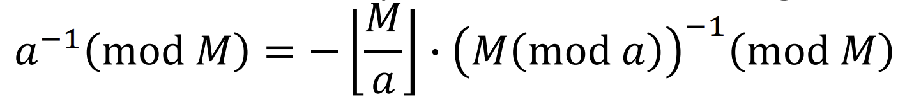
- Podemos precalcular los inversos modulares de para valores de ≤ 10^6 con el siguiente algoritmo:
const int MAXN = 1e6+6, M = 1e9+7;
int INV[MAXN];
INV[1] = 1;
for(ll a = 2; a < MAXN; a++) INV[a] = M - (ll)(M/a)*INV[M%a]%M;
Complejidad:
Ecuacion Diofantica Lineal
El problema consite en determinar si existe solucion para la siguiente ecuacion:
done , y son enteros.
Se resuelve modificando ligeramente el algoritmo de Euclides como sigue:
int gcd(int a, int b, int& x, int& y) {
if (b == 0) {
x = 1;
y = 0;
return a;
}
int x1, y1;
int d = gcd(b, a % b, x1, y1);
x = y1;
y = x1 - y1 * (a / b);
return d;
}
bool find_any_solution(int a, int b, int c, int &x0, int &y0, int &g) {
g = gcd(abs(a), abs(b), x0, y0);
if (c % g) {
return false;
}
x0 *= c / g;
y0 *= c / g;
if (a < 0) x0 = -x0;
if (b < 0) y0 = -y0;
return true;
}
Complejidad:
NOTA:
- El algoritmo no contempla el caso en el que
Dada una solucion, podemos obtener infinitas soluciones de la siguiente manera:
Teorema Chino del Resto
El problema consiste en resolver sistemas de ecuaciones de la forma:
donde los modulos son coprimos dos a dos.
Definimos:
Luego, una solucion es:
la cual podemos obtener como:
struct Congruence {
long long a, m;
};
long long crt(vector<Congruence> const& congruences) {
long long M = 1;
for (auto const& congruence : congruences) {
M *= congruence.m;
}
long long solution = 0;
for (auto const& congruence : congruences) {
long long a_i = congruence.a;
long long M_i = M / congruence.m;
long long N_i = mod_inv(M_i, congruence.m);
solution = (solution + a_i * M_i % M * N_i) % M;
}
return solution;
}
Complejidad:
Dada una solucion , podemos obtener infinitas soluciones de la siguiente manera:
Algoritmos de Busqueda
Busqueda Lineal
for (int i = 0; i < n ; i ++) {
if (array[i] == X) {
// encontre X
}
}
Complejidad:
Busqueda Binaria
Especialmente eficiente para:
- Buscar valores "menores que" o "mayores que"
- Buscar valores minimos y maximos de funciones
- Buscar la primer posicion en la que cambia el valor de una funcion
int a = 0 , b = n -1;
while (a <= b) {
int k = (a+b )/2;
if (array [k] == x) {
// encontre X en indice K
}
if (array [k] > x) b = k -1;
else a = k+1;
}
Complejidad:
Implementacion alternativa con saltos:
int k = 0;
for (int b = n/2; b >= 1; b /= 2) {
while (k + b < n && array [k+b] <= x) k += b ;
}
if (array [k] == x) {
// encontre X en indice K
}
Complejidad:
NOTA:
- Para poder utilizar estos algoritmos se deben ordenar los elementos
Ventana Deslizante
Especialmente eficiente para:
- Problemas de subarreglos continuos
// En iR , jR devolvemos la respuesta
void ventanaDeslizante (vector<int > &A , int x , int &iR , int &jR) {
int n = int ( A.size()), j = n-1;
for (int i = 0; i < n ; i ++) // fijando el extremo i:
{ // mientras la suma sea > x, disminuimos j
while ( j > i && A[i] + A[j] > x )
j--;
// Sale del while : (A[i] + A[j] <= x) o (j == i)
if ( j > i && A[i] + A[j] == x )
{
iR = i;
jR = j;
}
}
}
Complejidad:
Este algoritmo resuelve el problema de: Dado un arreglo de n numeros positivos, y un numero x, nos interesa saber si existe un subarreglo cuya suma sea x.
NOTAS:
- La ventana puede tener tanto un tamaño fijo como un tamaño variable
- Se necesitan dos indieces/punteros (uno para el primer elemento y otro para el ultimo)
- los numeros deben tener el mismo signo
2SUM
Especialmente eficiente para:
- Buscar dos numeros que sumen "X"
// En iR , jR devolvemos la respuesta
void sum2 (vector<int > &A, int x, int &iR , int &jR) {
int i, j;
i = 0;
j = A.size()-1;
while((j > i) && ((A[i] + A[j]) != x)) {
if((A[i] + A[j]) < x)) ++i;
else --j;
}
if((A[i] + A[j]) == x) {
iR = i;
jR = j;
}
}
Complejidad:
NOTAS:
- Los elementos deben estar ordenados
- Se necesitan dos indieces/punteros (uno para el primer elemento y otro para el ultimo)
Algoritmo de Mo
Especialmente eficiente para:
- Procesar querys de rango en un arreglo estatico
El algoritmo de Mo mantiene un rango activo de la matriz y la respuesta a la query actual es conocida en cada paso. Se procesan las querys una por una y se van moviendo los extremos del rango activo insertando y eliminando elementos.
El truco radica en el orden en el que se procesan las consultas: el arreglo es dividido en bloques de elementos y una query es procesada antes que una query si o y . Esto garantiza que todas las querys cuyo inidice inferior izquierdo se encuentren en el mismo bloque, se procesen juntas.
Complejidad: (donde es el costo de insercion y eliminacion)
Grafos
Representacion
NOTA: Las siguientes estructuras son para grafos dirigidos. Para grafos no dirigidos o bidireccionales, simplemente duplicar la cantidad de aristas
Lista de Adyacencias
En la representacion de lista de adyacencia, a cada nodo x del grafo se le asigna una lista de adyacencia que consiste en nodos a los que existe una arista desde x.
- ventaja: brindan una forma eficiente de encontrar todos los nodos a los que se puede viajar desde un nodo en particular
for (auto u : adj[x]) {
// process node u
}
Grafo Dirigido
vector<int> adj[MAXN];
// Para agregar usamos:
adj[1].push_back(2) // Si existe una arista de 1 a 2;
// ...
Grafo Dirigido Pesado
vector<pair<int,int>> adj[MAXN];
// Para agregar usamos:
adj[1].push_back({2,5}) // Si existe una arista de 1 a 2 con peso 5;
// ...
Lista de Aristas
Una lista de aristas contiene todos las aristas del grafo en algun orden. Resulta conveniente utilizar esta representacion cuando el algortimo procesa todas las aristas y no es necesario encontrar aristas relacionadas a un nodo determinado.
Grafo Dirigido
vector<pair<int,int>> edges;
// Para agregar usamos:
edges.push_back({1,2}) // Si existe una arista de 1 a 2;
// ...
Grafo Dirigido Pesado
vector<tuple<int,int,int>> edges;
// Para agregar usamos:
edges.push_back({1,2,5}) // Si existe una arista de 1 a 2 con peso 5;
// ...
Matriz de Adyacencia
Una matriz de adyacencia es un arreglo de dos dimensiones que representa las aristas existentes en el grafo.
-
ventaja: se pueden realizar chequeos eficientes sobre existencias de aristas
-
desventaja: inviable en memoria para grafos grandes
Grafo Dirigido
int g[MAXN][MAXN] = {};
// Para agregar hacemos:
g[1][2] = 1; // arista de 1 a 2
Grafo Dirigido Pesado
int g[MAXN][MAXN] = {};
// Para agregar hacemos:
g[1][2] = 5; // arista de 1 a 2 con peso 5
Algoritmos de Recorrido
Suelen ser usados para:
DFS
Ve los vecinos en algun orden.
Especialmente eficiente para:
- Resolver puentes[6]
- Resolver puntos de articulacion[7]
- Armar un spanning tree (provee una estructura del grafo)
- Checkear ancestros en
- Definimos el rango de un nodo respecto al orden de recorrido DFS como . Luego, un nodo
ues hijo del nodovsi y solo si, el rango deuesta contenido en el rango dev
- Definimos el rango de un nodo respecto al orden de recorrido DFS como . Luego, un nodo
bitset<MAXN> visited;
void dfs(int r) { // <-- pasamos la raiz como parametro
if(visited[r]) return;
visited[r] = 1;
// process node r
for(auto u:adj[r]) {
dfs(u);
}
}
Complejidad
NOTAS:
- adj es la representacion del grafo en forma de una lista de adyacencias
- MAXN debe ser ser igual a la cantidad de vertices (o un poquito mas por las moscas)
BFS
Encuentra el camino mas corto a cada vertice desde la raiz r.
queue<int> q;
bitset<MAXN> visited;
int dist[n];
void bfs(int r) { // <-- pasamos la raiz como parametro
visited[r] = 1;
dist[r] = 0;
q.push(r);
while(!q.empty()) {
int s = q.front(); q.pop();
// process node s
for (auto u:adj[s]) {
if(visited[u]) continue;
visited[u] = 1;
dist[u] = dist[s] + 1;
q.push(u);
}
}
}
Complejidad
NOTAS:
adjes la representacion del grafo en forma de una lista de adyacencias- MAXN debe ser ser igual a la cantidad de vertices (o un poquito mas por las moscas)
Algoritmos para Obtener el Camino Minimo
BFS
Mismo algoritmo de la seccion anterior.
NOTA:
- solo funciona si el peso de todas las aristas son iguales
BFS 0-1
Cuando queremos hallar el camino minimo de un nodo a otro en un grafo cuyas aristas solamente tienen peso 0 o 1 podriamos optar por utilizar el algoritmo de Dijkstra, sin embargo existe una solucion mas eficiente que consite en modificar el algoritmo clascio de BFS.
deque<int> dq;
int distance[n];
for (int i = 0; i < n; i++) {
distance[i] = INF; // INF es un valor inalcanzable
}
void bfs(int r) { // <-- pasamos la raiz como parametro
distance[r] = 0;
dq.push_front(r);
while(!dq.empty()) {
int s = dq.front(); dq.pop_front();
// process node s
for (auto e:adj[s]) {
if (distance[e.first] > distance[s] + e.second)
{
distance[e.first] = distance[s] + e.second;
if (e.second)
dq.push_back(e.first);
else
dq.push_front(e.first);
}
}
}
}
Complejidad
NOTAS:
adjes la representacion del grafo en forma de una lista de adyacencias- Cada nodo puede aparecer mas de una vez en la dequeue
Bellman-Ford
Calcula el camino minimo desde un vertice hacia todos.
int distance[n];
void bf (int v) {
for(int i = 0; i < n; ++i) {
distance[i] = INF; // INF es un valor inalcanzable
}
distance[v] = 0;
for(int i = 1; i <= n-1; i++) {
for(auto e:edges) {
int a, b, w;
tie(a, b, w) = e;
distance[b] = min(distance[b], distance[a]+w);
}
}
}
Invariante: luego de su k-esima iteracion, calcula la distancia minima a todo v usando a lo sumo k aristas
Complejidad:
NOTAS:
edgeses la representacion del grafo en forma de una lista de aristas- funciona PARA TODO tipo de grafos
Ciclos Negativos
El algoritmo de Bellman-Ford puede ser utilizado para hallar ciclos negativos en el grafo. Si se realiza una iteracion extra y alguna distancia es reducida, signifca que existe al menos un ciclo negativo.
Dijkstra
Devuelve el camino minimo de un vertice a todos.
priority_queue<pair<ll,int>, vector<pair<ll,int>>, greater<>> pq;
bitset<MAXN> visited;
ll dist[MAXN];
void dijkstra(int r) {
fill(dist, dist+MAXN, INF);
pq.push({0,r});
dist[r] = 0;
while (!pq.empty()) {
int v = pq.top().second; pq.pop();
if (visited[v]) continue;
visited[v] = 1;
for (auto [u, w] : adj[v]) {
if (dist[v]+w < dist[u]) {
dist[u] = dist[v]+w;
pq.push({dist[u],u});
}
}
}
}
Invariante: Antes de la k-esima iteracion, calcula correctamente la distancia hacia los k vertices mas cercanos al origen
Invariante: En cada iteracion, toma al vertice no procesado que este a distancia minima del origen
Complejidad:
NOTAS:
adjes la representacion del grafo en forma de una lista de adyacencias- Requiere que el costo de las aristas sea no negativo
- MAXN debe ser ser igual a la cantidad de vertices (o un poquito mas por las moscas)
- Util para grafos densos
- Vale tanto para grafos dirigidos como no dirigidos
Floyd-Warshall
Computa la distancia entre todo par de vertices.
int dist[n][n];
for (int i = 1; i <= n; i++) {
for (int j = 1; j <= n; j++) {
if (i == j) dist[i][j] = 0;
else if (adj[i][j]) dist[i][j] = adj[i][j];
else dist[i][j] = INF; // INF es un valor enorme
}
}
for(int k = 0; k < n; k++) {
for(int i = 0; i < n; i++) {
for(int j = 0; j < n; j++) {
dist[i][j] = min(dist[i][j], dist[i][k] + dist[k][j]);
}
}
}
Invariante: luego de la k-esima iteracion, computa los caminos k-internos[8] minimos.
Complejidad
NOTAS:
adjes la representacion del grafo en forma de una matriz de adyacencia- Permite arsitas con peso negativo
Ciclos Negativos
Tras haber ejecutado el algoritmo de Floyd-Warshall, podemos detectar la existencia de ciclos negativos ne tiempo , solamente debemos iterar la diagonal de la matriz con la distancias en busqueda de un valor negativo. De ser ese el caso, sabremos que existe al menos un ciclo negativo presente en el grafo
Grafos Dirigidos
Los grafos dirigidos poseen aristas que solo pueden ser recorridas en un solo sentido.
Topological Sorting
Un orden topologico es una forma de ordenacion para los nodos del grafo de forma tal que si existe un camino que lleva desde el nodo a al nodo b, entonces a aparece antes que b en la ordenacion.
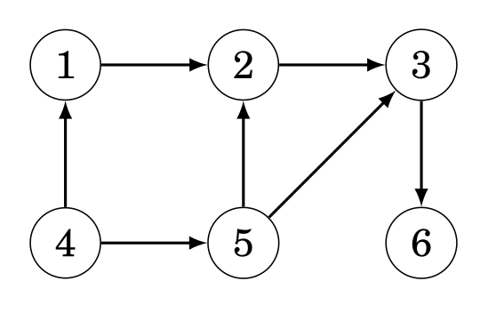
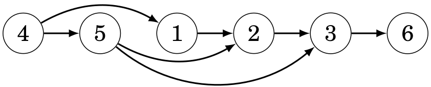
Arriba vemos un DAG (Directed Acyclic Graph) y abajo su ordenamiento topologico.
El algoritmo recorre el grafo con DFS comenzando desde un nodo no procesado. Decimos que un nodo ha sido procesado si todos sus sucesores han sido procesados. Tras cada DFS, todos los nodos procesados se agregan al orden. Finalmente, debemos ivertir el orden para obtener el orden topologico.
PRECONDICION: El grafo debe ser un DAG
bitset<MAXN> visited;
vector<int> ans;
void dfs(int v) {
visited[v] = 1;
for (int u : adj[v]) {
if (!visited[u])
dfs(u);
}
ans.push_back(v);
}
void topological_sort() {
visited.reset();
ans.clear();
for (int i = 0; i < n; ++i) {
if (!visited[i]) {
dfs(i);
}
}
reverse(ans.begin(), ans.end());
}
Complejidad:
NOTA:
adjes la representacion del grafo en forma de una lista de adyacencias
Contar el Numero de Caminos en un DAG
El siguiente algoritmo almacena en paths[a] la cantidad de caminos desde un nodo dado (en este caso el nodo 0) hacia el nodo a.
ll paths[n] = {};
paths[0] = 1;
for(int i = 1; i<n; i++)
{
for (int u : adj[ans[i]])
{
paths[ans[i]] += paths[u];
}
}
Complejidad:
NOTAS:
adjes la representacion del grafo en forma de una lista de adyacenciasanses el orden topologico del grafo
Contar el Numero de Caminos de Distancia k
Cuando representamos a un grafo sin pesos como una matriz de adyacencia , contiene el numero de caminos de aristas entre los nodos del grafo.
(La multiplicacion y potenciacion de matrices estan implementadas aqui).
Ejemplo
Dado el siguiente grafo y su correspondiente matriz de adyacencia:


contiene todos los caminos de aristas:

Notar que, por ejemplo, debido a los caminos y .
Caminos Minimos con Exactamente k Aristas
Cuando representamos a un grafo con pesos como una matriz de adyacencia , contiene el peso del del camino mas corto de aristas entre los nodos del grafo si utilizamos la siguiente formula para el producto matricial:
vector<vector<ll>> minplus_mul(const vector<vector<ll>> &A, const vector<vector<ll>> &B)
{
int n = A.size();
vector<vector<ll>> C(n, vector<ll>(n, INF));
for(int i = 0; i < n; i++){
for(int k = 0; k < n; k++){
if(A[i][k] == INF) continue;
for(int j = 0; j < n; j++){
if(B[k][j] == INF) continue;
C[i][j] = min(C[i][j], A[i][k] + B[k][j]);
}
}
}
return C;
}
vector<vector<ll>> minplus_pow(vector<vector<ll>> base, long long exp)
{
int n = base.size();
vector<vector<ll>> res(n, vector<ll>(n, INF));
for(int i = 0; i < n; i++)
res[i][i] = 0;
while(exp){
if(exp & 1)
res = minplus_mul(res, base);
base = minplus_mul(base, base);
exp >>= 1;
}
return res;
}
Ejemplo
Dado el siguiente grafo y su correspondiente matriz de adyacencia:


contiene los caminos de costo minimo con aristas:

Notar que, por ejemplo, el cual corresponde al camino .
Calcular Destino en un Grafo Sucesor
Un grafo sucesor es un grafo dirigido donde de cada nodo sale exactamente una arista. Estos grafos consisten de una o mas componentes conexas donde cada una contiene un ciclo y caminos que llevan a dicho ciclo, por lo tanto n=m.
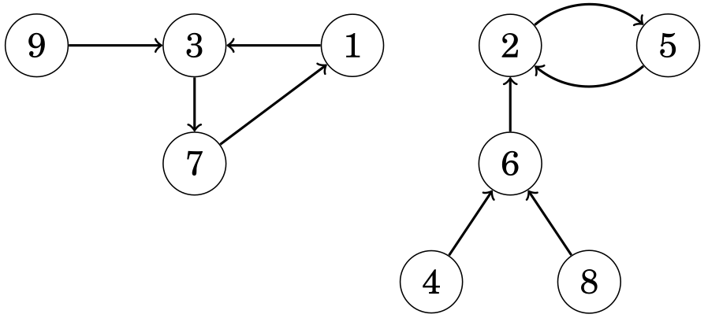
Representacion grafica de un Grafo Sucesor
El algoritmo primero preprocesa la tabla succ[x][k] que nos indica para cada nodo x el destino luego de realizar 2^k pasos. Luego podemos recorrer cualquier cantidad de pasos m realizando log(m) consultas a la tabla.
const int LOG = ceil(log2(MAXN));
int succ[MAXN][LOG]; // succ[x][j] = nodo alcanzado desde x en 2^j pasos
int n; // Numero de nodos
void preprocess(vector<int>& next) {
// Inicializamos los pasos de 2^0
for (int i = 0; i < n; i++)
succ[i][0] = next[i];
for (int j = 1; j < LOG; j++) {
for (int i = 0; i < n; i++) {
succ[i][j] = succ[succ[i][j-1]][j-1];
}
}
}
int get_successor(int x, int k) {
for (int j = 0; j < LOG; j++) {
if (k & (1 << j)) {
x = succ[x][j]; // Avanzamos 2^j pasos si el bit j esta activo
}
}
return x;
}
Complejidad construccion:
Complejidad consulta:
NOTA:
nextes un vector que indicia en la posicioni-esima, el sucesor inmediato del nodoi
Floyd
El algoritmo de Floyd sirve para detectar ciclos en grafos sucesores. En particular, el algoritmo devuelve el primer nodo del ciclo y la longitud del ciclo.
El algoritmo de Floyd itera el grafo mediante dos punteros, a y b. Ambos comienzan desde el nodo x, el cual es el nodo inicial del grafo (aquel sin aristas de entrada), y luego a avanza un paso y b dos hasta que finalmente apunten al mismo nodo. Esto nos indica que a ha avanzado k pasos y que b avanzo 2k pasos, por lo que la longitud del ciclo divide a k. Gracias a esto es que si cambiamos el valor de a nuevamente a x y avanzamos de a un paso a la vez a a y a b, eventualmente estos se juntaran en el nodo que da inicio al ciclo. Finalemente, para calcular la longitud del ciclo, simplemente debemos contar la cantidad de pasos unitarios que necesita b hasta llegar nuevamente hasta a.
// Primer avance
a = next(x);
b = next(next(x));
while (a != b) {
a = next(a);
b = next(next(b));
}
// Calculamos first
a = x;
while (a != b) {
a = next(a);
b = next(b);
}
int first = a;
// Calculamos length
b = next(a);
int length = 1;
while (a != b) {
b = next(b);
length++;
}
Complejidad:
NOTA:
nextes un vector que indicia en la posicioni-esima, el sucesor inmediato del nodoi
Kosaraju
Encuentra las componentes fuertemente conexas[9] de un grafo dirigido.
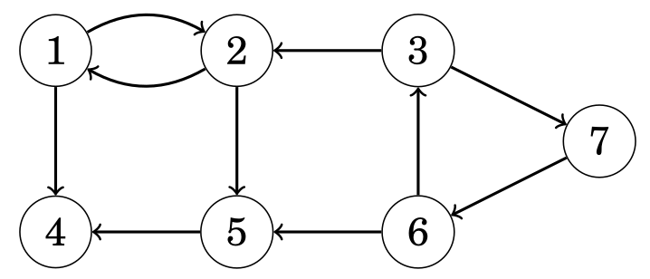
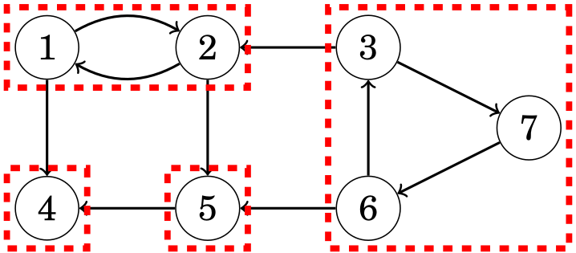
Arriba vemos un grafo dirigido y abajo sus componentes fuertemente conexas resaltadas con rojo.
Notar que las componentes halladas forman un DAG:
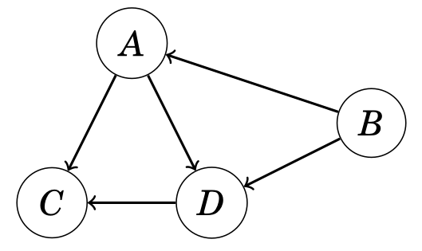
Este tipo de grafos se nococen como "grafos condensados"
bitset<MAXN> visited;
vector<vector<int>> adj; // Lista de adyacencia del grafo
vector<vector<int>> adj_cond; // Lista de adyacencia del grafo condensado
vector<vector<int>> components; // Comoponentes fuertemente conexos del grafo
void dfs(int v, vector<vector<int>> const& adj, vector<int> &output) {
visited[v] = 1;
for (auto u : adj[v])
if (!visited[u])
dfs(u, adj, output);
output.push_back(v);
}
vector<int> order; // Lista ordenada segun el tiempo de finalizacion de procesamiento de los nodos
// Primer DFS
for (int i = 0; i < n; i++)
if (!visited[i])
dfs(i, adj, order);
// Creamos las lista de adyacencia con las direcciones invertidas
vector<vector<int>> adj_rev(n);
for (int v = 0; v < n; v++)
for (int u : adj[v])
adj_rev[u].push_back(v);
visited.reset();
reverse(order.begin(), order.end());
vector<int> roots(n, 0); // Almacena la raiz de cada vertice en su propia componente fuertemente conexa
// Segundo DFS
for (auto v : order)
if (!visited[v]) {
vector<int> component;
dfs(v, adj_rev, component);
components.push_back(component);
int root = *min_element(begin(component), end(component)); // tomamos el elemento mas chico de la componente fuertemente conexa como raiz
for (auto u : component)
roots[u] = root;
}
// Añadimos los vertices al grafo condensado
for (int v = 0; v < n; v++)
for (auto u : adj[v])
if (roots[v] != roots[u])
adj_cond[roots[v]].push_back(roots[u]);
Complejidad:
2SAT
En este tipo de problemas, nos dan una formula logica con la siguiente estructura: (a1 ∨ b1) ∧ (a2 ∨ b2) ∧ · · · ∧ (am ∨ bm), donde cada ai y bi es una variable logica (x1, x2, . . . , xn) o la negacion de una variable (¬x1 , ¬x2, . . . , ¬xn). La tarea consiste en asignarle un valor de verdad a cada variable o indicar que no es posible, lo cual se logra mediante el siguiente algoritmo que hace uso del algoritmo de Tarjan:
bool truth[MAXN]; // truth[cmp[i]] = valor de la variable i en la solucion (2SAT)
int nvar; // Numero de variables originales
int neg(int x) { return MAXN - 1 - x; } // Retorna la negacion de x en el grafo
vector<int> g[MAXN]; // Grafo de implicaciones
int n;
int lw[MAXN]; // Representa el "low-link value" de cada nodo para Tarjan
int idx[MAXN]; // Guarda el indice de descubrimiento en el DFS de Tarjan
int qidx; // Contador de nodos visitados en el DFS de Tarjan
int cmp[MAXN]; // Guarda la componente fuertemente conexa (SCC) a la que pertenece cada nodo
int qcmp; // Contador de SCCs encontradas
stack<int> st; // Pila utilizada por el algoritmo de Tarjan
void tjn(int u) {
lw[u] = idx[u] = ++qidx; // Asigna indice unico y low-link inicial
st.push(u);
cmp[u] = -2; // Marcamos como parte del stack
for (int v : g[u]) { // Recorremos vecinos
if (!idx[v] || cmp[v] == -2) { // Si no ha sido visitado o esta en el stack
if (!idx[v]) tjn(v);
lw[u] = min(lw[u], lw[v]); // Actualizamos low-link
}
}
if (lw[u] == idx[u]) { // Si encontramos raiz de una SCC
int x, l = -1;
do {
x = st.top();
st.pop();
cmp[x] = qcmp; // Asigna SCC a los nodos
if (min(x, neg(x)) < nvar) l = x; // Identificamos una variable de la SCC
} while (x != u);
if (l != -1) truth[qcmp] = (cmp[neg(l)] < 0); // Determinamos el valor de verdad
qcmp++; // Pasamos a la siguiente SCC
}
}
/* Ejecuta Tarjan en todo el grafo */
void scc() {
memset(idx, 0, sizeof(idx)); // Reseteamos idx
qidx = 0; // Reiniciamos contador de indices
memset(cmp, -1, sizeof(cmp)); // Inicializamos SCCs
qcmp = 0; // Reiniciamos contador de SCCs
for (int i = 0; i < n; i++)
if (!idx[i]) tjn(i); // Ejecutamos Tarjan en cada nodo no visitado
}
/* Construye el grafo de implicaciones */
void addor(int a, int b) {
g[neg(a)].push_back(b); // ¬a → b
g[neg(b)].push_back(a); // ¬b → a
}
/* Verificacion de satisfactibilidad */
bool satisf(int _nvar) {
nvar = _nvar; // Guardamos numero de variables originales
n = MAXN; // Definimos tamaño del grafo
scc(); // Encontramos SCCs
for (int i = 0; i < nvar; i++)
if (cmp[i] == cmp[neg(i)]) return false; // Si x y ¬x estan en la misma SCC, es insatisfacible
return true; // Si no hay conflictos, es satisfacible
}
Complejidad:
NOTA:
gdebe ser cargado en un principio con la variables logicas utilizando la funcionaddor
Caminos y Circuitos
Hierholzer
Suele usarse para:
- Secuencias de De Bruijn
El algoritmo de Hierholzer es un metodo para construir un circuito Euleriano[10] (tambien se explica como construir un camino Euleriano en las notas).
Para que exista un camino Euleriano en un grafo, este, ademas de ser conexo[3:1], debe cumplir una de las siguientes dos condiciones dependiendo de si es dirigido o no:
Grafos no Dirigidos:
- El grado de cada nodo es par
- El grado de exactamente dos nodos es impar, y el grado del resto de nodos es par
Si se cumple la primera condicion, cada camino Euleriano es tambien un circuito Euleriano. Si la segunda condicion es la que se cumple, los nodos de grados impares son los nodos de inicio y fin de los unicos dos caminos Eulerianos que existen, los cuales no pueden ser circuitos Eulerianos.
Grafos Dirigidos:
- La cantidad de aristas que entran al nodo es igual a la cantidad de aristas que salen del nodo para cada nodo
- Un nodo tiene una arista extra de entrada respecto a sus aristas de salida, mientras que otro nodo tiene una arista extra de salida respecto a sus aristas de entrada, y el resto de los nodos tiene la misma cantidad de aristas de entrada que de salida
Similar a como sucede con los grafos no dirigidos, que se cumpla la primera condicion significa que cada camino Euleriano es tambien un circuito Euleriano. Y si se cumple la segunda condicion, resulta que existe un unico camino Euleriano que comienza desde el nodo con mas aristas de salida y termina en el nodo con mas aristas de entrada; por lo tanto, dicho camino no puede ser un circuito.
Algoritmo
El algoritmo asume que ya se ha verificado la existencia de un circuito Euleriano como indicamos arriba. Luego, si se cumple la primera condicion, vamos recorriendo con un DFS todas las aristas comenzando desde el nodo start. Cada vez que revisamos todas las aristas del nodo, agregamos el nodo al circuito (el cual guardamos en el vector circuit) y hacemos backtracking para tratar de extender el circuito con las aristas que todavia no se visitaron hasta haberlas visitado a todas.
Grafos no Dirigidos
PRECONDICION: El grafo debe ser conexo
vector<pair<int,int>> adj[MAXN];
bitset<MAXM> used;
vector<int> circuit;
// adj guarda pares {nodo_destino, id_arista}
void hierholzer(int start) {
vector<int> currPath;
currPath.push_back(start);
while (!currPath.empty()) {
int currNode = currPath.back();
while (!adj[currNode].empty() && used[adj[currNode].back().second]) {
adj[currNode].pop_back();
}
if (!adj[currNode].empty()) {
auto edge = adj[currNode].back();
int nextNode = edge.first;
int edgeID = edge.second;
adj[currNode].pop_back();
used[edgeID] = 1;
currPath.push_back(nextNode);
}
else {
circuit.push_back(currPath.back());
currPath.pop_back();
}
}
reverse(circuit.begin(), circuit.end());
}
Complejidad
NOTAS:
adjes la representacion del grafo en forma de una lista de adyacencias- Si queremos obtener un camino Euleriano, simplemente debemos hallar los dos nodos con grados impares y agregar una arista extra entre ellos. Al final del circuito, debemos eliminar la arista extra
Grafos Dirigidos
PRECONDICION: El grafo debe ser conexo
vector<int> adj[MAXN];
int in_degree[MAXN], out_degree[MAXN];
vector<int> circuit;
void hierholzer(int start) {
vector<int> currPath;
currPath.push_back(start);
while (!currPath.empty()) {
int currNode = currPath.back();
if (!adj[currNode].empty()) {
int nextNode = adj[currNode].back();
adj[currNode].pop_back();
currPath.push_back(nextNode);
}
else {
circuit.push_back(currPath.back());
currPath.pop_back();
}
}
reverse(circuit.begin(), circuit.end());
}
int start_node = -1; // Solo para camino euleriano
int start_count = 0, end_count = 0; // Solo para camino euleriano
bool bad = false;
forn(i,MAXN)
{
if (out_degree[i] - in_degree[i] == 1) {
start_node = i;
start_count++;
} else if (in_degree[i] - out_degree[i] == 1) {
end_node = i;
end_count++;
} else if (in_degree[i] != out_degree[i]) {
bad = true; // Diferencia mayor a 1, imposible
}
}
Complejidad
NOTAS:
adjes la representacion del grafo en forma de una lista de adyacencias. Se destruye al finalizar el algoritmo- Si queremos obtener un camino Euleriano, simplemente debemos hallar los dos nodos con diferencias en sus aristas de entrada y salida y agregar una arista extra entre ellos. Al final del circuito, debemos eliminar la arista extra
Encontrar Camino Hamiltoniano
Suele usarse para:
- Recorrido del Caballo
El siguiente algoritmo es un metodo para construir un camino Hamiltoniano[11].
Chequear que exista un camino Hamiltoniano es un problema NP-Dificl, sin embargo, existen dos teoremas que son suficientes (pero no necesarios) para garantizar la existencia de un camino Hamiltoniano:
- Teorema de Dirac: Si los grados de cado nodo son >=
⌊n/2⌋, el grafo contiene un camino Hamiltoniano - Teorema de Ore: Si la suma de los grados de cada par de nodos no adyacentes es >=
n, el grafo contiene un camino Hamiltoniano
El algoritmo utiliza un enfoque probabilistico para reordenar el orden en el que se recorren las aristas y la estructura Link/Cut Tree. La cantidad de reordenamientos esta dado por mx_ch.
Grafos no Dirigidos
PRECONDICION: El grafo debe ser conexo
namespace hamil {
template <typename T> bool chkmax(T &x,T y){return x<y?x=y,true:false;}
template <typename T> bool chkmin(T &x,T y){return x>y?x=y,true:false;}
#define vi vector<int>
#define pb push_back
#define mp make_pair
#define pi pair<int, int>
#define fi first
#define se second
#define ll long long
namespace LCT {
vector<vi> ch;
vi fa, rev;
void init(int n) {
ch.resize(n + 1);
fa.resize(n + 1);
rev.resize(n + 1);
for (int i = 0; i <= n; i++)
ch[i].resize(2),
ch[i][0] = ch[i][1] = fa[i] = rev[i] = 0;
}
bool isr(int a)
{
return !(ch[fa[a]][0] == a || ch[fa[a]][1] == a);
}
void pushdown(int a)
{
if(rev[a])
{
rev[ch[a][0]] ^= 1, rev[ch[a][1]] ^= 1;
swap(ch[a][0], ch[a][1]);
rev[a] = 0;
}
}
void push(int a)
{
if(!isr(a)) push(fa[a]);
pushdown(a);
}
void rotate(int a)
{
int f = fa[a], gf = fa[f];
int tp = ch[f][1] == a;
int son = ch[a][tp ^ 1];
if(!isr(f))
ch[gf][ch[gf][1] == f] = a;
fa[a] = gf;
ch[f][tp] = son;
if(son) fa[son] = f;
ch[a][tp ^ 1] = f, fa[f] = a;
}
void splay(int a)
{
push(a);
while(!isr(a))
{
int f = fa[a], gf = fa[f];
if(isr(f)) rotate(a);
else
{
int t1 = ch[gf][1] == f, t2 = ch[f][1] == a;
if(t1 == t2) rotate(f), rotate(a);
else rotate(a), rotate(a);
}
}
}
void access(int a)
{
int pr = a;
splay(a);
ch[a][1] = 0;
while(1)
{
if(!fa[a]) break;
int u = fa[a];
splay(u);
ch[u][1] = a;
a = u;
}
splay(pr);
}
void makeroot(int a)
{
access(a);
rev[a] ^= 1;
}
void link(int a, int b)
{
makeroot(a);
fa[a] = b;
}
void cut(int a, int b)
{
makeroot(a);
access(b);
fa[a] = 0, ch[b][0] = 0;
}
int fdr(int a)
{
access(a);
while(1)
{
pushdown(a);
if (ch[a][0]) a = ch[a][0];
else {
splay(a);
return a;
}
}
}
}
vi out, in;
vi work(int n, vector<pi> eg, ll mx_ch = -1) {
// mx_ch : max number of adding/replacing default is (n + 100) * (n + 50)
// n : number of vertices. 1-indexed.
// eg: vector<pair<int, int> > storing all the edges.
// return a vector<int> consists of all indices of vertices on the path. return empty list if failed to find one.
out.resize(n + 1), in.resize(n + 1);
LCT::init(n);
for (int i = 0; i <= n; i++) in[i] = out[i] = 0;
if (mx_ch == -1) mx_ch = 1ll * (n + 100) * (n + 50); //default
vector<vi> from(n + 1), to(n + 1);
for (auto v : eg)
from[v.fi].pb(v.se),
to[v.se].pb(v.fi); // Bidirectional connections
unordered_set<int> canin, canout;
for (int i = 1; i <= n; i++)
canin.insert(i),
canout.insert(i);
mt19937 x(chrono::steady_clock::now().time_since_epoch().count());
int tot = 0;
while (mx_ch >= 0) {
vector<pi> eg;
for (auto v : canout)
for (auto s : from[v])
if (in[s] == 0) {
assert(canin.count(s));
continue;
}
else eg.pb(mp(v, s));
for (auto v : canin)
for (auto s : to[v])
eg.pb(mp(s, v)); // Edge in both directions for undirected graph
shuffle(eg.begin(), eg.end(), x);
if (eg.size() == 0) break;
for (auto v : eg) {
mx_ch--;
if (in[v.se] && out[v.fi]) continue;
if (LCT::fdr(v.fi) == LCT::fdr(v.se)) continue;
if (in[v.se] || out[v.fi])
if (x() & 1) continue;
if (!in[v.se] && !out[v.fi])
tot++;
if (in[v.se]) {
LCT::cut(in[v.se], v.se);
canin.insert(v.se);
canout.insert(in[v.se]);
out[in[v.se]] = 0;
in[v.se] = 0;
}
if (out[v.fi]) {
LCT::cut(v.fi, out[v.fi]);
canin.insert(out[v.fi]);
canout.insert(v.fi);
in[out[v.fi]] = 0;
out[v.fi] = 0;
}
LCT::link(v.fi, v.se);
canin.erase(v.se);
canout.erase(v.fi);
in[v.se] = v.fi;
out[v.fi] = v.se;
}
if (tot == n - 1) {
vi cur;
for (int i = 1; i <= n; i++)
if (!in[i]) {
int pl = i;
while (pl) {
cur.pb(pl),
pl = out[pl];
}
break;
}
return cur;
}
}
//failed to find a path
return vi();
}
}
int main() {
// Numero de nodos en el grafo
int n = 5; // Ejemplo con 5 nodos
// Representacion de las aristas (grafos no dirigidos)
vector<pair<int, int>> edges = {
{1, 2}, {2, 3}, {3, 4}, {4, 5}, {5, 1} // Ejemplo de ciclo no dirigido
};
// Llamada a la funcion que devuelve el camino
hamil::vi path = hamil::work(n, edges);
// Imprimir el camino si se encontro
if (!path.empty()) {
cout << "Camino encontrado: ";
for (int v : path) {
cout << v << " ";
}
cout << endl;
} else {
cout << "No se encontro un camino." << endl;
}
return 0;
}
Complejidad:
Grafos Dirigidos
PRECONDICION: El grafo debe ser conexo
namespace hamil {
template <typename T> bool chkmax(T &x,T y){return x<y?x=y,true:false;}
template <typename T> bool chkmin(T &x,T y){return x>y?x=y,true:false;}
#define vi vector<int>
#define pb push_back
#define mp make_pair
#define pi pair<int, int>
#define fi first
#define se second
#define ll long long
namespace LCT {
vector<vi> ch;
vi fa, rev;
void init(int n) {
ch.resize(n + 1);
fa.resize(n + 1);
rev.resize(n + 1);
for (int i = 0; i <= n; i++)
ch[i].resize(2),
ch[i][0] = ch[i][1] = fa[i] = rev[i] = 0;
}
bool isr(int a)
{
return !(ch[fa[a]][0] == a || ch[fa[a]][1] == a);
}
void pushdown(int a)
{
if(rev[a])
{
rev[ch[a][0]] ^= 1, rev[ch[a][1]] ^= 1;
swap(ch[a][0], ch[a][1]);
rev[a] = 0;
}
}
void push(int a)
{
if(!isr(a)) push(fa[a]);
pushdown(a);
}
void rotate(int a)
{
int f = fa[a], gf = fa[f];
int tp = ch[f][1] == a;
int son = ch[a][tp ^ 1];
if(!isr(f))
ch[gf][ch[gf][1] == f] = a;
fa[a] = gf;
ch[f][tp] = son;
if(son) fa[son] = f;
ch[a][tp ^ 1] = f, fa[f] = a;
}
void splay(int a)
{
push(a);
while(!isr(a))
{
int f = fa[a], gf = fa[f];
if(isr(f)) rotate(a);
else
{
int t1 = ch[gf][1] == f, t2 = ch[f][1] == a;
if(t1 == t2) rotate(f), rotate(a);
else rotate(a), rotate(a);
}
}
}
void access(int a)
{
int pr = a;
splay(a);
ch[a][1] = 0;
while(1)
{
if(!fa[a]) break;
int u = fa[a];
splay(u);
ch[u][1] = a;
a = u;
}
splay(pr);
}
void makeroot(int a)
{
access(a);
rev[a] ^= 1;
}
void link(int a, int b)
{
makeroot(a);
fa[a] = b;
}
void cut(int a, int b)
{
makeroot(a);
access(b);
fa[a] = 0, ch[b][0] = 0;
}
int fdr(int a)
{
access(a);
while(1)
{
pushdown(a);
if (ch[a][0]) a = ch[a][0];
else {
splay(a);
return a;
}
}
}
}
vi out, in;
vi work(int n, vector<pi> eg, ll mx_ch = -1) {
// mx_ch : max number of adding/replacing default is (n + 100) * (n + 50)
// n : number of vertices. 1-indexed.
// eg: vector<pair<int, int> > storing all the edges.
// return a vector<int> consists of all indices of vertices on the path. return empty list if failed to find one.
out.resize(n + 1), in.resize(n + 1);
LCT::init(n);
for (int i = 0; i <= n; i++) in[i] = out[i] = 0;
if (mx_ch == -1) mx_ch = 1ll * (n + 100) * (n + 50); //default
vector<vi> from(n + 1), to(n + 1);
for (auto v : eg)
from[v.fi].pb(v.se),
to[v.se].pb(v.fi);
unordered_set<int> canin, canout;
for (int i = 1; i <= n; i++)
canin.insert(i),
canout.insert(i);
mt19937 x(chrono::steady_clock::now().time_since_epoch().count());
int tot = 0;
while (mx_ch >= 0) {
vector<pi> eg;
for (auto v : canout)
for (auto s : from[v])
if (in[s] == 0) {
assert(canin.count(s));
continue;
}
else eg.pb(mp(v, s));
for (auto v : canin)
for (auto s : to[v])
eg.pb(mp(s, v));
shuffle(eg.begin(), eg.end(), x);
if (eg.size() == 0) break;
for (auto v : eg) {
mx_ch--;
if (in[v.se] && out[v.fi]) continue;
if (LCT::fdr(v.fi) == LCT::fdr(v.se)) continue;
if (in[v.se] || out[v.fi])
if (x() & 1) continue;
if (!in[v.se] && !out[v.fi])
tot++;
if (in[v.se]) {
LCT::cut(in[v.se], v.se);
canin.insert(v.se);
canout.insert(in[v.se]);
out[in[v.se]] = 0;
in[v.se] = 0;
}
if (out[v.fi]) {
LCT::cut(v.fi, out[v.fi]);
canin.insert(out[v.fi]);
canout.insert(v.fi);
in[out[v.fi]] = 0;
out[v.fi] = 0;
}
LCT::link(v.fi, v.se);
canin.erase(v.se);
canout.erase(v.fi);
in[v.se] = v.fi;
out[v.fi] = v.se;
}
if (tot == n - 1) {
vi cur;
for (int i = 1; i <= n; i++)
if (!in[i]) {
int pl = i;
while (pl) {
cur.pb(pl),
pl = out[pl];
}
break;
}
return cur;
}
}
//failed to find a path
return vi();
}
}
int main() {
// Numero de nodos en el grafo
int n = 5; // Ejemplo con 5 nodos
// Representacion de las aristas (grafos dirigidos)
vector<pair<int, int>> edges = {
{1, 2}, {2, 3}, {3, 4}, {4, 5}, {5, 1} // Ejemplo de ciclo dirigido
};
// Llamada a la funcion que devuelve el camino
hamil::vi path = hamil::work(n, edges);
// Imprimir el camino si se encontro
if (!path.empty()) {
cout << "Camino encontrado: ";
for (int v : path) {
cout << v << " ";
}
cout << endl;
} else {
cout << "No se encontro un camino." << endl;
}
return 0;
}
Complejidad:
Flujos y Cortes
Los algoritmos de esta seccion reciben como input un grafo dirigido donde el peso de cada arista es la capacidad de cada arista, i.e., la cantidad maxima de flujo que puede pasar por esa arista. Ademas, el grafo contiene dos nodos importantes: la fuente que no tiene aristas de entradas, y el resumidero que no tiene aristas de salida.
- Propiedad: La cantidad maxima de flujo que se puede transportar desde la fuente hacia el resumiedero es igual a la suma de las capacidades de los nodos pertenecientes al corte.
Aplicaciones
-
Caminos con Aristas Disjuntas: Se nos pide encontrar la maxima cantidad de caminos desde la fuente hacia el resumidero de forma tal que cada arista aparezca a lo sumo en un solo camino. Para ello, simplemente debemos cambiar la capacidad de todas las aristas a 1 y ejecutar Dinic. Como los caminos tienen capacidad 1, cada vez que enviamos flujo por una arista de ese camino, esta se satura por lo que no volvera a ser utilizada. Asi, el flujo maximo sera la cantidad maxima de caminos validos existentes.
-
Caminos con Nodos Disjuntos: Se nos pide encontrar la maxima cantidad de caminos desde la fuente hacia el resumidero de forma tal que cada nodo, con excepcion de la fuente y el resumidero, aparezca a lo sumo en un solo camino. Para ello, dividiremos cada nodo en 2, a excepcion de la fuente y el resumidero, donde una parte se queda con las aristas de entrada, mientras que la otra se queda con las aristas de salida; tambien agregamos una arista de capacidad 1 entre las dos mitades. Finalmente, corremos Dinic en el nuevo grafo. Como la arista que conecta a las dos partes de cada nodo tiene capacidad 1, cada camino solo puede pertenecer a un unico nodo y asi, el flujo maximo sera la cantidad maxima de caminos validos existentes.
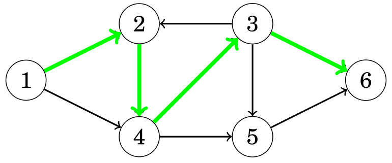
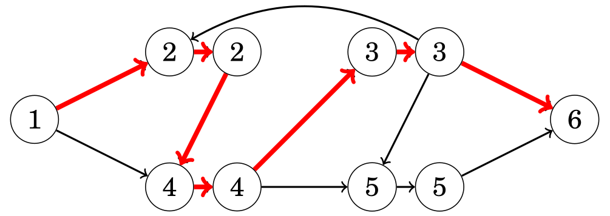
Arriba el grafo original y abajo el grafo luego de haber realizado la "division".
- Matching Maximo: Dado un grafo bipartito[5:1] no dirigido, se nos pide hallar el matching[12] mas grande posible. Para lograrlo, basta extender el grafo con una fuente, un resumidero, aristas e interpretar todas las aristas como si tuvieran capacidad 1 y fueran dirigidas tal como se muestra en las imagenes de abajo. Luego, como la capacidad de todas las aristas es 1, al correr Dinic, el tamano del matching sera el mismo que el flujo maximo.
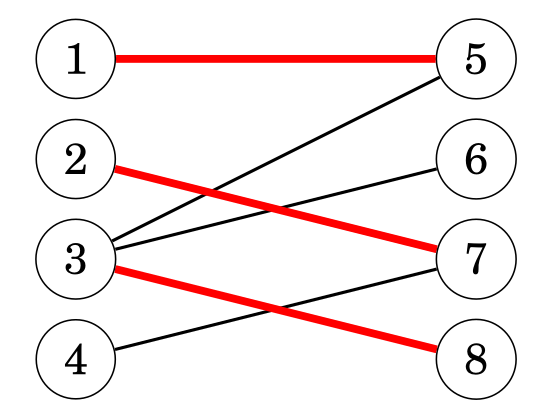
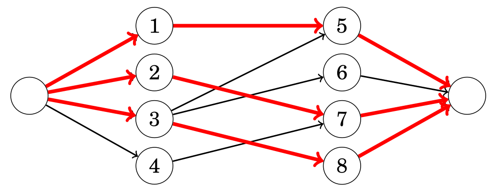
Arriba el grafo original y abajo como debe quedar el grafo tras la extension.
-
Matching Perfecto: Dado un grafo bipartito[5:2] no dirigido, se nos pide determinar si existe un matching[12:1] perfecto en el grafo, i.e., sea
Xel conjunto de nodos de a izquierda yYel conjunto de nodos a derecha, queremos hallar un matchingMtal que|M| = |X|o|M| = |Y|. Ahora, el teorema de Hall nos dice que existe matching perfecto exactamente cuando cada subconjunto deXcumple que|X| <= |vecinos(X)|o cada subconjunto deYcumple que|X| <= |vecinos(X)|. La idea es transformar el grafo igual que lo hicimos para el problema de obtener el matching maximo y correr Dinic para obtener el flujo maximo. Luego, si el flujo maximo se corresponde con|X|o|Y|entonces, segun el teorema de Hall, existe matching perfecto. -
Cobertura Minima de Nodos(MVC)/Conjunto Maximo Independiente(MIS): Dado un grafo bipartito[5:3] no dirigido, se nos pide hallar el minimo conjunto de nodos tales que cada arista tenga al menos un extremo en el conjunto (cobertura minima de nodos) y/o hallar el maximo conjunto de nodos tales que no haya dos nodos pertenecientes al conjunto que esten conectados por una arista. Ahora, el teorema de Kőnig nos dice que el tamaño de la cobertura minima de nodos es siempre igual al tamaño del maximo matching[12:2], siempre que el grafo sea bipartito. La idea es transformar el grafo al igual que lo hicimos en el problema de obtener el matching maximo y posteriormente ejecutar Dinic. Sea
Xel conjunto de nodos de a izquierda yYel conjunto de nodos a derecha, el siguiente paso es realizar una DFS desde todos los nodos deXque quedaron sin matchear (aquellos cuyas aristas de salida no esten pasando flujo). Finalmente, el conjunto de todos los nodos deXque no fueron visitados y todos los nodos deYque si fueron visitados componen la cobertura minima de nodos y los demas nodos son el conjunto maximo independiente.- La Cobertura Minima de Aristas(MEC) es igual a |V| - |MVC|.
-
Cobertura por Caminos de Nodos Disjuntos: Dado un DAG (Directed Acyclic Graph), se nos pide hallar la minima cantidad de caminos en el grafo de forma tal que cada nodo pertenezca a exactamente un camino. La idea es transformar el grafo como se muestra en la imagen de abajo y posteriormente ejecutar Dinic. Sea
nla cantidad total de nodos ycla cantidad total de nodos emparejados; la cantidad de caminos esta dado por los nodos no emparejados, o sean-c. Esto tambien nos dice que son los nodos que no estan emparejados a derecha los que inician los caminos, por lo que comenzando desde dichos nodos, podriamos obtener losn-ccaminos.
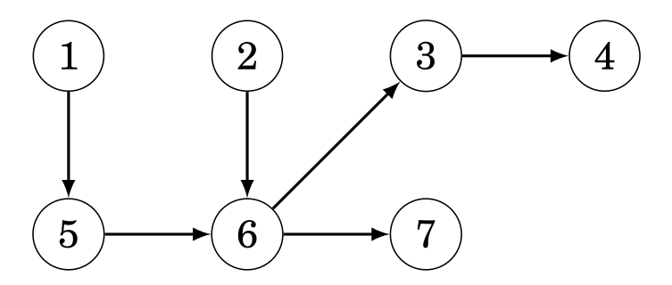
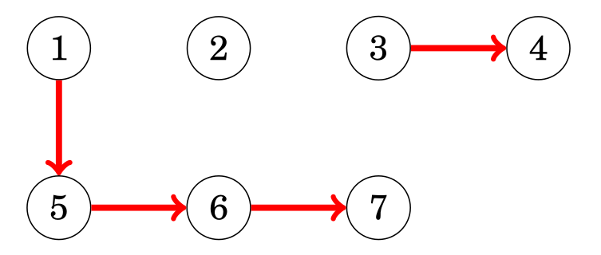
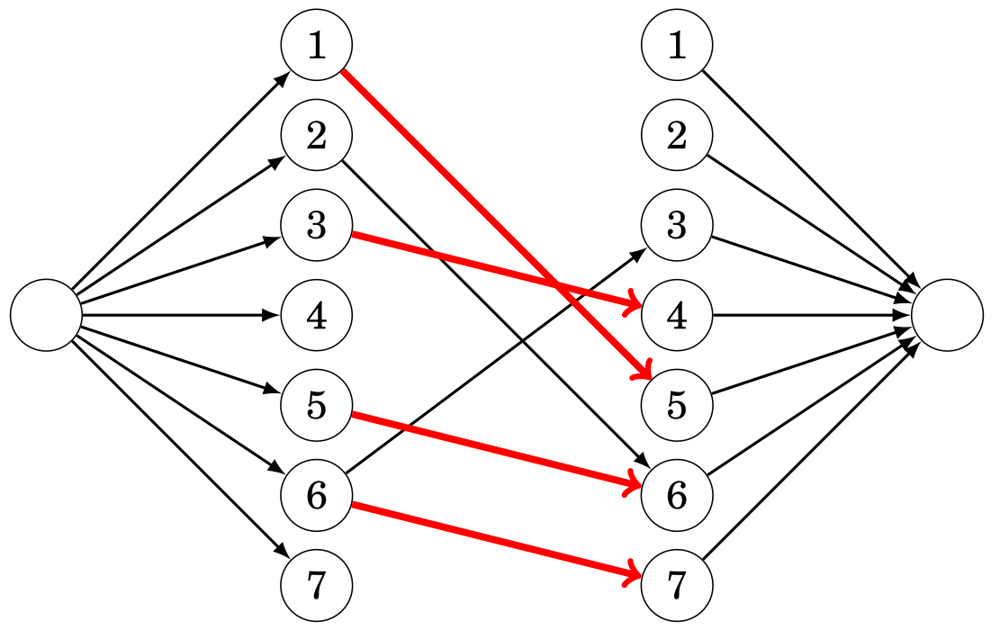
Arriba el grafo original, en el centro una solucion al problema y abajo como debe quedar el grafo transformado.
-
Cobertura por Caminos General: Dado un DAG (Directed Acyclic Graph), se nos pide hallar la minima cantidad de caminos en el grafo de forma tal que cada nodo pertenezca a al menos un camino. El problema se puede resolver de la misma forma que el problema de cobertura por caminos de nodos disjuntos con la particularidad de que en el grafo transformado existe una arista
a → b, dondeaes disitnto deb(i.e, no existe la aristaa → aen el grafo transformado), siempre que exista un camino desdeahaciaben el grafo original (posiblemente a traves de muchos nodos).- Una posible implementacion para hallar las aristas es realizar una DFS desde cada nodo y agregar una arista por cada nodo visitado, lo cual nos da una complejidad de > (no encontre una implementacion mas sencilla💀).
-
Hallar la Maxima Anticadena: Dado un DAG (Directed Acyclic Graph), se nos pide hallar una anticadena de longitud maxima. En un grafo, se entiende por anticadena a un conjunto de nodos tal que para cada nodo en el conjunto, no existe un camino que lleve al resto de nodos, por lo que podemos decir que todos los nodos pertenecientes a la anticadena son de cierta forma "independientes" los unos de los otros. Ahora, el teorema de Dilworth nos dice que el tamaño de la maxima anticadena es igual a la cantidad de caminos que resuelven el problema de cobertura por caminos general. De hecho, si construimos los caminos tal como se indico en el problema de cobertura por caminos de nodos disjuntos, podemos formar una anticadena simplemente tomando los nodos que inician los caminos (¡Aunque no es la unica!).
-
Problema de Asignacion General: Dados un grafo dirigido G = (V,E) y una funcion de valor w: E Z, queremos elegir un subconjunto de nodos V' V tal que: (u,v) E, si v V' u V'; y maximice .
Para resolver este problema construimos un grafo G' = (V',E') tal que:- V' = V {S,T}, donde S es el nodo fuente y T es el nodo sumidero.
- Para cada nodo v V, si w(v) < 0, agrego una arista (S,v) con capacidad -w(v), y si w 0, agrego una arista (v,T) con capacidad w(t).
- Para cada arista (u,v) E, agrego una arista (u,v) E' con capacidad .
- Calculo el corte minimo entre S y T en G'.
- El conjunto de nodos V' alcanzables desde S en la red residual.
- El valor de V' es la suma de los w(v) positivos menos el corte minimo.
-
Asignacion de Maquina y Tareas: Un caso particular del problema anterior, es cuando tenemos un conjunto de tareas T y un conjunto de maquinas M, donde el costo de cada tarea esta dado por b(t) y quiero elegir un subconjunto de maquinas y tareas que me dan un beneficio neto maximo. La idea es reducir el problema a uno de corte minimo como sigue:
- Asumo que ya me pagaron todas las tareas. Entonces, no realizar la tarea t tiene un costo b(t).
- Defino un grafo G = (V,E).
- Agrego un nodo fuente S y un nodo sumidero T.
- Para cada maquina m M, agrego una arista (S,m) con capacidad c(m).
- Para cada tarea t T, agrego una arista (t,T) con capacidad b(t).
- Para cada tarea t T y cada maquina m M, agrego una arista (m,t) con capacidad .
- Calculo el corte minimos entre S y T en G.
- El maximo beneficio alcanzable es menos el costo del corte minimo. Esto representa la necesidad de la maquina m para la tarea t.
- Si la arista (S,m) forma parte del corte, compro la maquina m.
- Si la arista (t,T) forma parte del corte, entonces NO realizao la tarea t.
-
Aristas con Flujo Minimo: La idea para resolver este problema es la siguiente:
- Construimos un grafo G' = (V',E'), donde V' = V {S,T}, nuevos nodos fuente y sumidero.
- (u,v) E, agregamos a E' una arista (u,v) con capacidad d(u,v) - c(u,v), arista (S',v) y (u,T'), ambas con capacidad c(u,v).
- Agregamos aristas (S',S) y (T,T') con capacidad .
- Calculamos el flujo maximo f' de S' a T'. SI hay aristas saliente de S' (excepto (S',S)) que no esten saturadas, el flujo no es satisfacible.
- Si el flujo es satisfacible, f(u,v) = c(u,v) + f(u,v) para cada (u,v) E.
- El flujo f cumple las condiciones del problema y maximiza el valor |f|.
Dinic
El algoritmo de Dinic es utilizando para hallar el flujo maximo y, por lo tanto, tambien nos permite hallar los nodos pertenecientes al minimo corte con un paso extra. En cada iteracion, Dinic realiza una BFS para hacer una construccion por niveles del grafo, donde cada nivel se corresponde con la distancia respecto a la fuente. Luego, por medio de una DFS, empuja flujo por niveles a travez de las aristas hasta que ya no se pueda mas. El algoritmo termina cuando ya no se pueda agregar mas flujo, i.e., el resumidero no es alcanzable por aristas con peso positivo.
struct Dinic {
int nodes,src,dst; // Cantidad de nodos, indice del nodo fuente, indice del nodo resumidero
vector<int> dist,q,work; // Distancia de cada nodo respecto a la fuente, vector auxiliar para BFS, vector auxiliar para DFS
struct edge {int to,rev;ll f,cap;}; // {nodo destino de la arista original, indice de la arista inversa en la lista de adyacencia del nodo destino, flujo actual de la arista original, capacidad maxima de la arista}
vector<vector<edge>> adj; // Representacion del grafo como lista de adyacencia
Dinic(int x):nodes(x),adj(x),dist(x),q(x),work(x){} // Constructor
void add_edge(int s, int t, ll cap) {
adj[s].pb((edge){t,sz(adj[t]),0,cap});
adj[t].pb((edge){s,sz(adj[s])-1,0,0});
}
bool dinic_bfs() { //Construccion del nivel del grafo
fill(ALL(dist),-1);
dist[src]=0;
int qt=0;
q[qt++]=src;
for (int qh=0; qh<qt; qh++) {
int u=q[qh];
forr(i,0,sz(adj[u])){
edge &e=adj[u][i];
int v=adj[u][i].to;
if (dist[v]<0&&e.f<e.cap) {
dist[v]=dist[u]+1;
q[qt++]=v;
}
}
}
return dist[dst]>=0;
}
ll dinic_dfs(int u, ll f) { // Empujar flujo
if (u==dst)
return f;
for (int &i=work[u]; i<sz(adj[u]); i++) {
edge &e=adj[u][i];
if (e.cap<=e.f)
continue;
int v=e.to;
if (dist[v]==dist[u]+1) {
ll df=dinic_dfs(v,min(f,e.cap-e.f));
if (df>0) {
e.f+=df;
adj[v][e.rev].f-=df;
return df;
}
}
}
return 0;
}
ll max_flow(int _src, int _dst) {
src=_src;
dst=_dst;
ll result=0;
while (dinic_bfs()) {
fill(ALL(work),0);
while (ll delta=dinic_dfs(src,INF))
result+=delta;
}
return result;
}
vector<int> min_cut(Dinic &dinic) {
vector<int> min_cut;
vector<bool> visited(dinic.nodes, false);
queue<int> q;
q.push(dinic.src);
visited[dinic.src] = true;
while (!q.empty()) {
int u = q.front(); q.pop();
min_cut.push_back(u);
for (const auto &e : dinic.adj[u]) {
if (!visited[e.to] && e.f < e.cap) {
visited[e.to] = true;
q.push(e.to);
}
}
}
return min_cut;
}
};
int main() {
int n = 6; // Numero de nodos
Dinic dinic(n);
// Agregar aristas con capacidad
dinic.add_edge(0, 1, 3);
dinic.add_edge(0, 2, 2);
dinic.add_edge(1, 3, 2);
dinic.add_edge(2, 3, 1);
dinic.add_edge(3, 4, 4);
dinic.add_edge(3, 5, 2);
int maxflow = dinic.max_flow(0, 5);
cout << "Max Flow: " << maxflow << endl;
vector<int> min_cut = min_cut(dinic);
cout << "Min-Cut Nodes: ";
for (int v : min_cut) {
cout << v << " ";
}
cout << endl;
return 0;
}
Complejidad:
NOTA:
- Para grafos bipartitos (generalmente problemas de matching), la complejidad desciende a
Arboles
Un arbol es un grafo conexo[3:2] y aciclico que consta de n nodos y n-1 aristas. Cuenta con las siguientes propiedades:
- Remover una arista divide el arbol en dos componentes
- Agregar una arista crea un ciclo
- Existe un unico camino entre cada par de nodos
Nodos de cada Subarbol
La funcion toma dos parametros: s que es el nodo a procesar y e que es el nodo previamente procesado. El proposito del parametro e es que no se visiten nodos ya visitados (notar que esto solamente es valido para arboles).
void dfs(int s, int e) {
subs[s] = 1;
for (auto u : adj[s]) {
if (u == e) continue;
dfs(u, s);
subs[s] += subs[u];
}
}
dfs(x,-1); // La primera llamada es con -1 puesto que no hay nodo previo
Complejidad
Calcular Diametro[13] del Arbol
Dado un nodo arbitrario a (en el algortimo tomamos 0 por simplicidad), encontramos el nodo b mas alejado de a y luego el nodo c mas alejado de b. Finalmente, el diametro del arbol esta dado por la distancia entre b y c el cual guardamos en la variable diameter. En este algoritmo, el arbol es visto de la siguiente forma:
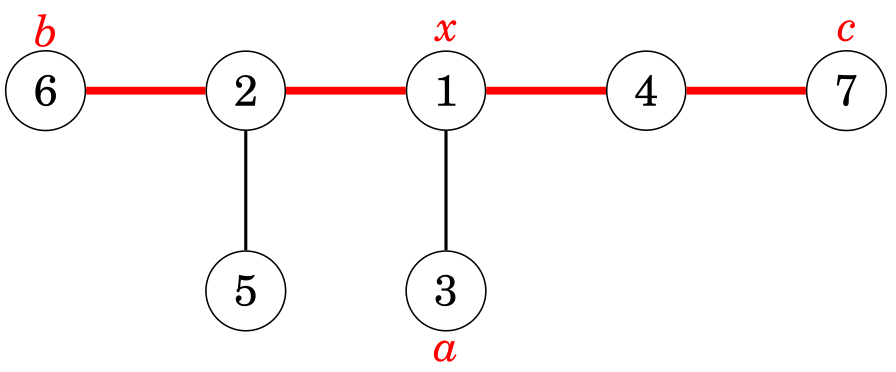
xrepresenta el nodo donde el camino hacia el nodoase une al del diametro
int farthestNode = 0;
int diameter = 0;
void dfs(int s, int e, int l) {
if (l > diameter) {
diameter = l;
farthestNode = s;
}
for (auto u : adj[s]) {
if (u == e) continue;
dfs(u, s, l + 1);
}
}
// Primera DFS desde el nodo 0
dfs(0, -1, 0);
// Segunda DFS desde el nodo mas alejado encontrado
diameter = 0;
dfs(farthestNode, -1, 0);
Complejidad
Hallar Ancestros
El algoritmo primero preprocesa la tabla up[x][k] que nos indica para cada nodo x su ancestro despues de subir 2^j niveles. Luego podemos obtener el m-esimo ancestro de cualquier nodo realizando log(m) consultas a la tabla o -1 si es que no existe dicho ancestro.
const int LOG = ceil(log2(MAXN));
int up[MAXN][LOG]; // up[x][j] = 2^j-esimo ancestro de x
memset(up, -1, sizeof(up));
int n; // Numero de nodos
// **Preprocesamiento con DFS para construir la tabla up**
void dfs(int node, int parent) {
up[node][0] = parent; // El ancestro inmediato de node es su padre
for (int j = 1; j < LOG; j++) {
if (up[node][j-1] != -1)
up[node][j] = up[up[node][j-1]][j-1]; // Saltamos 2^(j-1) + 2^(j-1)
else
up[node][j] = -1; // No tiene ancestro a esa altura
}
// Recorremos los hijos en DFS
for (int child : adj[node]) {
if (child != parent) {
dfs(child, node);
}
}
}
int get_ancestor(int x, int k) {
for (int j = 0; j < LOG; j++) {
if (k & (1 << j)) { // Si el bit j esta activo en k, saltamos 2^j
x = up[x][j];
if (x == -1) break; // Si ya no tiene ancestro, salimos
}
}
return x;
}
// Preprocesar la tabla up con DFS desde la raiz (asumimos raiz en 0)
dfs(0, -1);
Complejidad construccion:
Complejidad consulta:
NOTA:
adjes la representacion del arbol en forma de una lista de adyacencias
Ancestro Comun Menor
El algoritmo comienza realizando un Euler Tour, el cual es un recorrido DFS en el cual se va guardando el tiempo en el que aparece por primer vez cada nodo en el recorrido en el arreglo first, tambien se calcula la profundidad de cada nodo en el arreglo depth y ademas se guarda el recorrido DFS con los retornos en el arreglo euler. Luego, se construye una sparse table con las profundidades para buscar eficientemente el ancestro comun menor de dos nodos (el cual sera el nodo de menor profundidad entre ambos). Finalmente, por medio de la funcion lca, podemos devolver el ancestro comun menor entre cualesquiera dos nodos.
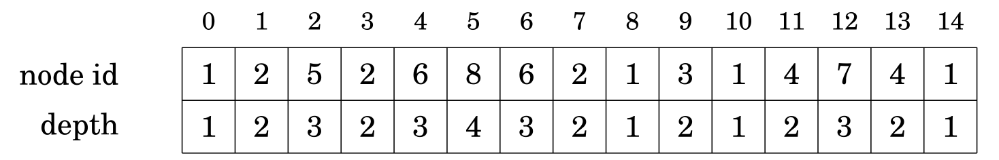
Ejemplo de como se veria el arreglo
eulerydepthdespues de realizar el DFS
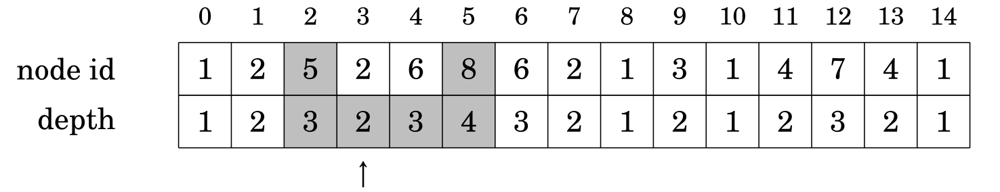
Ejemplo de como obtener el LCA entre los nodos 5 y 8
const int LOG = ceil(log2(MAXN));
int euler[2 * MAXN], depth[2 * MAXN], first[MAXN];
int lookup[2 * MAXN][LOG]; // Sparse Table para minimo
int timer = 0;
void dfs(int node, int parent, int d) {
first[node] = timer;
euler[timer] = node;
depth[timer] = d;
timer++;
for (int child : adj[node]) {
if (child == parent) continue;
dfs(child, node, d + 1);
euler[timer] = node; // Volvemos a agregar el nodo al Euler Tour
depth[timer] = d;
timer++;
}
}
void buildSparseTable() {
int N = timer;
for (int i = 0; i < N; i++)
lookup[i][0] = i;
for (int j = 1; (1 << j) <= N; j++) {
for (int i = 0; i + (1 << j) <= N; i++) {
int left = lookup[i][j - 1];
int right = lookup[i + (1 << (j - 1))][j - 1];
lookup[i][j] = (depth[left] < depth[right]) ? left : right;
}
}
}
int queryMin(int L, int R) {
int j = 31 - __builtin_clz(R - L + 1); // log2(R - L + 1)
int left = lookup[L][j];
int right = lookup[R - (1 << j) + 1][j];
return (depth[left] < depth[right]) ? left : right;
}
int lca(int u, int v) {
int L = first[u], R = first[v];
if (L > R) swap(L, R);
return euler[queryMin(L, R)];
}
dfs(0, -1, 0); // Asumimos que el nodo 0 es la raiz
build_sparse_table();
Complejidad construccion:
Complejidad consulta:
NOTA:
adjes la representacion del arbol en forma de una lista de adyacencias
Distancia entre Dos Nodos
Podemos calcular la distancia entre dos nodos cualesquiera de una arbol enraizado simplemente si conocemos su ancestro comun menor y las profundidades de los nodos con la siguiente formula:
depth[a] + depth[b] − 2 * depth[c];
Aqui queremos calcular la distancia entre los nodos
ayb, yces el lca
Spanning Tree
El arbol de expansion de un grafo consiste de todos los nodos del grafo y algunas de sus aristas, de forma tal que existe un unico camino entre cualesquiera dos nodos.
El peso de un spanning tree esta dado por la suma del peso de sus aristas.
NOTA:
- Existe mas de una forma de crear un spanning tree dado un grafo, por lo que estos arboles no son unicos
Kruskal
En el algoritmo de Kruskal, el arbol de expansion inicialmente contiene los nodos del grafo sin ninguna arista. Luego, el algoritmo recorre todas las aristas, las cuales deben estar ordenadas por peso, y luego añade la arista siempre que esta no cree un ciclo.
- Preferible para grafos dispersos (n≈m)
sort(edges.begin(), edges.end());
for (int i = 0; i < edges.size(); i++) {
if (!same(get<1>(edges[i]), get<2>(edges[i])))
unite(get<1>(edges[i]), get<2>(edges[i]));
}
Complejidad:
NOTAS:
edgeses la representacion del grafo en forma de una lista de aristas que contiene primero el peso y luego los nodos- Las funciones
sameyunitepertenecen a la estructura DSU la cual debe ser inicializada previamente - El algoritmo resuelve el problema de hallar un minimum spanning tree; para resolver el problema de hallar un maximum spanning tree, solamente hay que cambiar el ordenamiento
Prim
En el algoritmo de Prim, inicialmente el arbol de expansion comienza con un nodo arbitario. Luego, siempre se añade la arista de peso minimo que agrega un nuevo nodo.
- Preferible para grafos densos (n<<m)
Kirchhoff
El Teorema de Kirchhoff nos provee una forma de calcular el numero de spanning trees de un grafo como el determinante de la matriz Laplaceana. Una matriz Laplaceana cumple las siguientes propiedades:
- es el grado del nodo
- si hay una arista entre los nodos y .
- si NO hay una arista entre los nodos y .
vector<vector<double>> build_laplacian(int n, const vector<pair<int,int>> &edges)
{
vector<vector<double>> L(n, vector<double>(n, 0.0));
for(auto [u, v] : edges){
L[u][u] += 1;
L[v][v] += 1;
L[u][v] -= 1;
L[v][u] -= 1;
}
return L;
}
vector<vector<double>> cofactor(const vector<vector<double>> &L)
{
int n = sz(L);
vector<vector<double>> M(n-1, vector<double>(n-1));
forr(i, 1, n)
forr(j, 1, n)
M[i-1][j-1] = L[i][j];
return M;
}
long long count_spanning_trees(int n, const vector<pair<int,int>> &edges)
{
auto L = build_laplacian(n, edges);
auto M = cofactor(L);
double det = reduce(M);
return llround(det);
}
Complejidad:
NOTAS:
- En la funcion cofactor quitamos la fila y la columna pero es indistinto de cual quitemos.
- reduce es la reduccion Gaussiana
Minimum Spanning Tree
bitset<MAXN> visited; // Indica si un nodo ya esta en el MST
int minEdge[MAXN]; // Peso minimo para alcanzar un nodo desde el MST
int parent[MAXN]; // Para reconstruir el MST
void prim(int start) {
fill(minEdge, minEdge + n, INT_MAX);
fill(parent, parent + n, -1);
priority_queue<pair<int, int>, vector<pair<int, int>>, greater<pair<int, int>>> pq;
pq.push({0, start}); // Iniciamos desde el nodo `start` con peso 0
minEdge[start] = 0;
while (!pq.empty()) {
int u = pq.top().second;
pq.pop();
if (visited[u]) continue;
visited[u] = 1;
// Procesamos las aristas del nodo `u`
for (int v = 0; v < n; v++) {
if (adj[u][v] && !visited[v] && adj[u][v] < minEdge[v]) {
minEdge[v] = adj[u][v];
parent[v] = u;
pq.push({minEdge[v], v});
}
}
}
// Mostramos el MST
cout << "Aristas del MST:\n";
for (int i = 1; i < n; i++) { // Empezamos desde 1 porque el nodo raiz no tiene padre
cout << parent[i] << " - " << i << " con peso " << adj[i][parent[i]] << "\n";
}
}
Complejidad:
NOTA:
adjes la representacion del grafo en forma de una matriz de adyacencia
Maximum Spanning Tree
bitset<MAXN> visited; // Indica si un nodo ya esta en el MST
int maxEdge[MAXN]; // Peso maximo para alcanzar un nodo desde el MST
int parent[MAXN]; // Para reconstruir el MST
void primMax(int start) {
fill(maxEdge, maxEdge + n, INT_MIN);
fill(parent, parent + n, -1);
// Priority queue para seleccionar la arista de mayor peso (default: max-heap)
priority_queue<pair<int, int>> pq;
pq.push({0, start}); // Iniciamos desde el nodo `start` con peso 0
maxEdge[start] = 0;
while (!pq.empty()) {
int u = pq.top().second;
pq.pop();
if (visited[u]) continue;
visited[u] = 1;
// Procesamos las aristas del nodo `u`
for (int v = 0; v < n; v++) {
if (adj[u][v] && !visited[v] && adj[u][v] > maxEdge[v]) {
maxEdge[v] = adj[u][v];
parent[v] = u;
pq.push({maxEdge[v], v});
}
}
}
// Mostramos el MST maximo
cout << "Aristas del MST Maximo:\n";
for (int i = 1; i < n; i++) { // Empezamos desde 1 porque el nodo raiz no tiene padre
cout << parent[i] << " - " << i << " con peso " << adj[i][parent[i]] << "\n";
}
}
Complejidad:
NOTA:
adjes la representacion del grafo en forma de una matriz de adyacencia
Centroid Decomposition
Un centroid es un nodo que al sacarlo, todos las componentes conexas que quedan tienen tamaño a lo sumo .
Teorema:
Todos los arboles tienen a lo sumo 2 centroids.
Propiedad:
Dado cualquier par de nodos y en el arbol original, existe exactamente un centroid que cumple dos condiciones:
- se ecuentra en el camino original entre y .
- Ambos nodos, y , pertenecen al subarbol centroid de (en el momento de la descomposcion donde elegimos a ).
// tag[y]>=tag[x] for every y in x’s connected subgraph (unrooted subtree)
vector<int> g[MAXN];
int tag[MAXN]; // time of discovery of centroid
int fat[MAXN]; // father in centroid decomposition
int szt[MAXN]; // size of subtree
int calcsz(int x, int f){
s zt[x] = 1;
for(auto y : g[x]) if(y != f && tag[y] < 0) szt[x] += calcsz(y, x);
return szt[x];
}
int ccnt = 0;
void cdfs(int x, int f, int sz = -1){ // O(nlogn)
if(sz < 0) sz = calcsz(x, -1);
for(auto y : g[x]) if(tag[y] < 0 && szt[y] * 2 >= sz){
szt[x] = 0; cdfs(y, f, sz); return;
}
tag[x] = ccnt++; fat[x] = f;
for(auto y : g[x]) if(tag[y] < 0) cdfs(y, x);
}
void centroid(){ mset(tag, -1); ccnt = 0; cdfs(0, -1); }
Complejidad:
Virtual Trees
Dado un arbol original y un subconjunto de nodos destacados (con ), un virtual tree es un arbol tal que:
- , i.e que contiene a todos los nodos de mas el LCA de cualquier par de nodos en .
- E preserva la estructura general, conectando con si es ancestro de en el arbol original y no hay ningun otro nodo de en el camino original entre ellos.
// assumes sorted v (in dfs order)
// virtual (directed) tree is t
void agr(ll x, ll y){if(y!=-1)t[x].pb(y);}
ll virtu(vector<ll> v){ // O(|v|) * O(lca)
stack<ll>s; s.push(v[0]); ll ult=-1,p;
auto vacia=[&](bool fg){
while(SZ(s)&&(fg||lca(s.top(),p)!=s.top())){
agr(s.top(),ult);
ult=s.top(); s.pop();
}
};
vector<ll> vi; // virtual nodes and possibly normal
fore(i,1,SZ(v)){
ll x=v[i]; p=lca(s.top(),x); vi.pb(p); vacia(0);
if(s.empty()||p!=s.top())s.push(p);
agr(p,ult); ult=-1; if(p!=x)s.push(x);
}
vacia(1); ll rt=ult; // root of t
// do stuff, then reset t with both v and vi
}
Complejidad:
Fuerza Bruta
Solo es util cuando el n lo permite, en caso contrario deberia optarse por utilizar greedy o programacion dinamica.
Generacion de Subconjuntos
Metodo 1
Dado un vector subset utilizado para mantener los elementos de cada subconjunto, el algortimo llama recursivamente a la funcion search() considerando incluir el elemento k o no.
void search(int k) {
if (k == n) {
// process subset
} else {
search(k+1);
subset.push_back(k);
search(k+1);
subset.pop_back();
}
}
Complejidad:
NOTA:
- En la primera llamada,
kdebe ser 0
Metodo 2
La idea consiste en explotar la representacion binaria de un numero. Se ve al subconjunto como un numero de n bits donde un 0 representa la ausencia del elemento y un 1 la presencia. Los elementos se representan de derecha izquierda siendo el primero el elemento 0.
for (int b = 0; b < (1<<n); b++) {
// process subset
}
Complejidad:
NOTAS:
- Es mas rapido que el metodo 1
- Esta limitado para 0 <= n < 64 ya que en el mejor de los casos podemos utilizar
long longpara representar hasta 64 bits
Generacion de Permutaciones
Metodo 1
Dado un vector permutation utilizado para contener la permutacion y un arreglo de booleanos chosen (tambien se podria emplear un bitset) utilizado para indicar que elemento ya ha sido incluido en la permutacion, el algortimo llama recursivamente a la funcion search() que va añadiendo un nuevo elemento al vector en cada llamada hasta que se genera una permutacion cuando el tamaño halla alcanzado n.
void search() {
if (permutation.size() == n) {
// process permutation
} else {
for (int i = 0; i < n; i++) {
if (chosen[i]) continue;
chosen[i] = true;
permutation.push_back(i);
search();
chosen[i] = false;
permutation.pop_back();
}
}
}
Complejidad
Metodo 2
Comenzando con la permutacion {0, 1, ..., n-1}, se generan las siguientes utilizando la funcion de la liberia estandar de C++ next_permutation().
vector<int> permutation;
for (int i = 0; i < n; i++) {
permutation.push_back(i);
}
do {
// process permutation
} while (next_permutation(permutation.begin(),permutation.end()));
Complejidad
NOTAS:
- Es mas rapido que el metodo 1
- Tambien se puede recorrer en orden inverso comenzando con la permutacion {n-1, n-2, ..., 0} y la funcion
prev_permutation()
Reunion en el Centro
Cuando el problema permita dividir el espacio de busqueda en dos partes de igual tamaño y exista una forma eficiente de combinarlas, conviene utilizar la tecnica de reunion en el centro.
Por ejemplo, considerese el problema de que dada una lista de n elementos se debe determinar si es posible tomar algunos numeros de ella de forma tal que su suma sea x. Sea n = 4, la lista [2, 4, 5, 9] y x = 15. En vez de calcular todos los subconjuntos posibles y sumar su elementos (lo cual tendria complejidad O(2^n)), podemos dividir la lista en dos sublistas A = [2, 4] y B = [5, 9], quedandonos los subconjuntos SA = [0, 2, 4, 6] y SB = [0, 5, 9, 14]. Solo resta chequear si la suma de algun elemento de SA con un elemento de SB es igual a 15, lo cual puede hacer en O((n/2)^2). En este caso es posible ya que 6 + 9 = 15, lo cual se corresponde con haber sumado 2 + 4 + 9 en la lista original. Este enfoque reduce la complejidad temporal de O(2^n) a O(2^(n/2)) lo cual es lo mismo que .
Backtracking
Un algortimo de Bactracking parte desde una solucion vacia y la extiende paso a paso de manera recursiva a una solucion posible de forma tal que detiene una rama de busqueda cuando la solucion parcial se vuelve inviable.
- En los algoritmos de backtracking, la complejidad temporal se ve fuertemente afectada por la eficiencia de la poda. Las mejores optimizaciones vienen dadas por las podas en los primeros pasos de la recursion
- La idea de "podar" consiste en buscar propiedades que permitan identificar soluciones invalidas en los niveles mas altos del arbol de recursion
Ejemplo: Problema de las N reinas
Fijada una fila, se itera por las columnas y se trata de colocar una reina. Si no se puede, se avanza a la siguiente columna (poda), caso contrario, se coloca una reina en esa posicion, se la marca y se avanza a la siguiente fila aunque tambien se explora la opcion de colocar la reina en la siguiente columna. Finalmente, si se pudo poner una reina por columna, eso significa que llegamos a una solucion y la variable count (que inicialmente es 0) se actualiza indicando que se hallo una nueva solucion.
void search(int y) {
if (y == n) {
count++;
return;
}
for (int x = 0; x < n; x++) {
if (column[x] || diag1[x+y] || diag2[x-y+n-1]) continue;
column[x] = diag1[x+y] = diag2[x-y+n-1] = 1;
search(y+1);
column[x] = diag1[x+y] = diag2[x-y+n-1] = 0;
}
}
Este codigo resuelve el famoso problema de las N reinas en [14] utilizando un algoritmo de Backtracking
Ejemplo de soluciones parciales generadas por el algoritmo para n = 4:
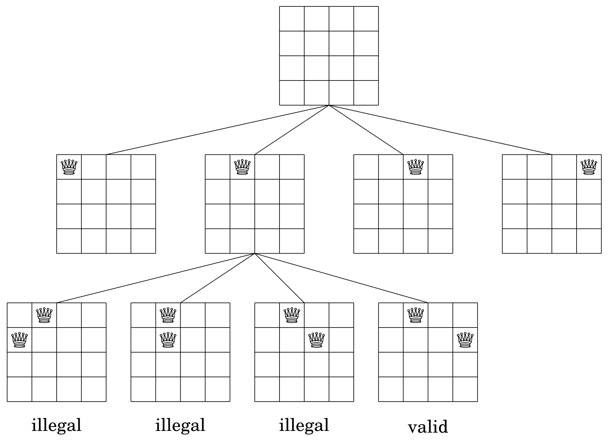
Greedy
Un algoritmo Greedy, elige la mejor solucion en cada paso. Si conviene no tomar la solucion optima en algun paso para poder elegir otra mejor luego, Greedy no lo detecta.
- Son muy eficientes
- Es dificil encontrar la estrategia que siempre devuelva la solucion optima y mas aun demostrar que esa estrategia funciona. Una buena forma para obtener mayor confiabilidad es ver si existen contraejemplos a la estrategia propuesta
Tips para afrontar un problema Greedy:
- Ordenar de distintas formas (al menos mentalmente) los conjuntos (o multiconjuntos) de candidatos
- Revisar lo que sucede en los casos maximos y minimos
- Comenzar con una solucion mala que cumpla las restricciones y luego ir pensando como mejorarla hasta que sea optima
Programacion Dinamica
Es un metodo que combina la correctitud de la busqueda completa (fuerza bruta) y la eficiencia de los algoritmos greedy.
Aplicaciones
- Encontrar la solucion optima: Queremos encontrar una solucion que sea lo mas grande o lo mas pequeña posible.
- Contar el numero de soluciones: Queremos calcular el valor total de posibles soluciones.
Tecnicas Comunes
- Rangos
- Bitmasks[15]
Requisitos
- La funcion debe ser determinisitica (mismo input, mismo output)
- La funcion debe ser pura (no depender de una variable global)
- El dominio de la funcion debe ser lo suficientemente chico para que entre en memoria (en mi experiencia no mas de 10^4 o 10^5)
- Es necesario que el problema tenga una subestructura optima (EVITAR CASOS BORDES por construccion)
- El problema debe poder partirse en subproblemas que puedan resolverse independientemente (las soluciones a los subproblemas son MEMORIZADAS y solo se calculan UNA VEZ)
Enfoques
TopDown
Enfoque que consiste en llamar a la funcion desde el caso de interes y llevarla hasta los casos bases.
int D(int n){
if (n <= 1) return 1;
if (dp[n] != -1) return dp[n];
return dp[n] = D(n - 1) + D(n - 2);
}
Ejemplo recursivo para calcular las posibles formas de colocar piezas de domino de 1x2 en un tablero de 2xn con un efoque topdown
-
pros:
- Computa los subproblemas SOLO cuando sea necesario
- Transformacion natural desde la definicion recursiva
- No requiere pensar el orden de procesamiento de estados
-
contras:
- Ligeramente mas lentas por el overhead que generan las llamadas recursivas a funciones
- Riesgo de Memory Limit Exceded (MLE) cuando la profundidad de la recursion es grande
BottomUp
Enfoque que consiste en fijar los casos bases y desde ahi llevarlo hasta el caso de interes.
int D[MAXN];
D[0] = D[1] = 1;
for (int n = 2; n < MAXN; ++n) {
D[n] = D[n - 1] + D[n - 2];
}
Ejemplo iterativo para calcular las posibles formas de colocar piezas de domino de 1x2 en un tablero de 2xn con un efoque bottomup
-
pros:
- Menos problemas en memoria y ligeramenter mas veloces al ser, por lo general, iterativas
- Ahorra memoria (aunque raramente es necesario)
-
contras:
- Requiere visitar todos los estados
- Se debe pensar cuidadosamente en que orden correr los estados
Complejidad de una DP
La complejidad de una dp esta dada por la suma de sus estados. Aqui un estado es una tupla con informacion particular de un subproblema (ej, n = 3).
Podemos mejorar la eficiencia si representamos los estados que sean subconjuntos de elementos en forma de bitmasks, como por ejemplo:
dp[1<<K][N]. Solo funciona para conjuntos con no mas de 64 elementos (utilizando long long)
Algoritmo de Kadane
Obtener la maxima suma de subarreglos:
int a[n];
int curmx = a[0], glmx = a[0];
forr(i,1,n)
{
curmx = max(a[i], curmx + a[i]);
glmx = max(glmx, curmx);
}
Complejidad
Obtener la minima suma de subarreglos:
int a[n];
int curmn = a[0], glmn = a[0];
forr(i,1,n)
{
curmn = min(a[i], curmn + a[i]);
glmn = min(glmn, curmn);
}
Complejidad
Algoritmo de Umbralizacion
Especialmente eficiente para:
- Problemas con medianas (
K = (len+1)/2) o cualquier percentil
// Precomputar prefijos para un valor candidato X
int b[n], c[n];
int sum_b[n+1], sum_c[n+1];
sum_b[0] = 0; sum_c[0] = 0;
forr(i,0,n)
{
b[i] = (a[i] >= X) ? 1 : -1;
c[i] = (a[i] <= X) ? 1 : -1;
sum_b[i+1] = sum_b[i] + b[i];
sum_c[i+1] = sum_c[i] + c[i];
}
// Verificar si X es el K-esimo elemento (ordenado de menor a mayor)
// del subarreglo [L, R]:
int len = R - L + 1;
int sum1 = sum_b[R+1] - sum_b[L];
int sum2 = sum_c[R+1] - sum_c[L];
// Condicion 1: Hay al menos (len - K + 1) elementos >= X
bool cond_b = (sum1 >= len - 2 * K + 2);
// Condicion 2: Hay al menos K elementos <= X
bool cond_c = (sum2 >= 2 * K - len);
bool es_kesimo = (cond_b && cond_c);
Complejidad
NOTA:
- se considera 1-indexed.
Recurrencias Lineales
Una recurrencia lineal es una funcion cuyos valores iniciales son conocidos y los siguientes valores se calculan mediante la formula:
donde son coeficientes constantes.
El objetivo es crear una matriz tal que:
Dicha matriz de tamano x es:
Luego, pueden ser calculados de la siguiente manera:
const ll MOD = 1e9+7;
vector<vector<ll>> mat_mul(const vector<vector<ll>> &A, const vector<vector<ll>> &B)
{
int n = A.size();
vector<vector<ll>> C(n, vector<ll>(n, 0));
for(int i=0;i<n;i++)
for(int k=0;k<n;k++) if(A[i][k])
for(int j=0;j<n;j++)
C[i][j] = (C[i][j] + A[i][k]*B[k][j]) % MOD;
return C;
}
vector<vector<ll>> mat_pow(vector<vector<ll>> base, ll exp)
{
int n = base.size();
vector<vector<ll>> A(n, vector<ll>(n, 0));
for(int i=0;i<n;i++) A[i][i] = 1;
while(exp){
if(exp & 1) A = mat_mul(A, base);
base = mat_mul(base, base);
exp >>= 1;
}
return A;
}
ll linear_recurrence(vector<ll> c, vector<ll> f, ll n)
{
int k = c.size();
if(n < k) return f[n];
// matriz de transicion
vector<vector<ll>> X(k, vector<ll>(k, 0));
// desplazamiento
for(int i=0;i<k-1;i++)
X[i][i+1] = 1;
// ultima fila (recurrencia)
for(int i=0;i<k;i++)
X[k-1][i] = c[k-1-i];
vector<vector<ll>> Xn = mat_pow(X, n);
// f(n) = primera fila * vector inicial
ll ans = 0;
for(int i=0;i<k;i++)
ans = (ans + Xn[0][i] * f[i]) % MOD;
return ans;
}
Complejidad:
NOTA:
- Notar que solo estamos devolviendo pero pordriamos devolver hasta inclusive en una misma iteracion.
Ejemplo: Fibonacci
// f(n) = f(n-1) + f(n-2)
vector<ll> c = {1, 1};
vector<ll> f = {0, 1};
cout << linear_recurrence(c, f, 10); // 55
Operaciones de Bits
Setear el k-esimo Bit
- a 1
x = x | (1 << k);
- a 0
x = x & ~(1 << k);
- invertir
x = x ^ (1 << k);
Chequear Potencia de 2
if(x & (x-1) == 0)
{
/* Hacer algo cuando x sea potencia de 2 */
}
Teoria de Juegos
Esta seccion esta orientada a la resolucion de problemas en los que haya un juego de dos jugadores y sin la presencia de elementos aleatorios. En tal caso, siempre se puede encontrar una estrategia optima para ambos jugadores la cual determine quien va a ser el ganador.
Estados de Juego
Los estados de juego siempre son de alguno de los siguientes dos tipos:
- Ganadores: Un estado ganador es un estado en el que el jugador va a ganar el juego si juega de manera optima.
- Perdedores: Un estado perrdedor es un estado en el que el jugador va a perder el juego si el oponente juega de manera optima.
Ejemplo 1
Consideremos un juego en el que inicialmente hay un monton con palos. El jugador A comienza y los turnos van alternando. En cada movimiento, un jugador pude remover , o palos del monton. Gana el jugador que quita el ultimo palo.
Es claro que cuando el monton tiene palos, estamos ante un estado perdedor. Del mismo modo, cuando el monton tiene , o palos, estamos ante un estado ganador.
Generalizando para este juego, decimos que estamos en un estado ganador si desde ese estado podemos alcanzar un estado perdedor con algun movimiento. De manera similar, decimos que estamos en un estado perdedor si desde ese estado solamente podemos alcanzar esados ganadores independientemente del movimiento que realicemos.
Luego, la clasificacion de los estados seria de la siguiente manera:
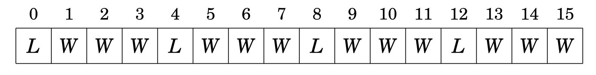
Notar que, en este caso, un estado es un estado perdedor si y solo si el estado es divisble por 4.
Ejemplo 2
Consideremos ahora un juego similar al anterior con la diferencia de que pierde el jugador que se queda sin movimientos y que si el monton tiene palos, puedo remover cualquier numero de ellos que sea menor a y que divida a .
El grafo de estados de los primeros estados del juego se puede ver en la siguiente imagen:
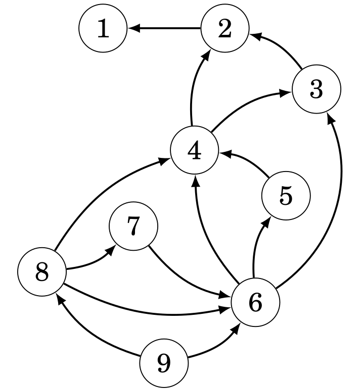
Aqui cada nodo es un estado y cada arista representa un posible movimiento entre ellos.
Es claro que el estado es un estad perdedor y, por lo tanto, cualquier estado que lleve al es un estado ganador. Luego, cualquier estado que lleve a un estado que lleva al es un estado perdedor y asi sucesivamente. Siguiendo esta idea, la clasificacion de los primetos estados seria de la siguiente manera:
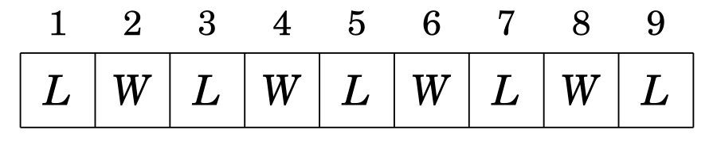
Notar que, en este caso, los estados perdedores son los estados impares y los estados ganadores son los pares.
El Juego de Nim
El juego de Nim consite de montones, cada uno con una determinada cantidad de palos. El jugador A comienza y los turnos van alternando. En cada turno, el jugador elige uno de los montones y puede remover cualquier cantidad de palos valida. Gana el jugador que remueve el ultimo palo.
Los estados en el juego de Nim son de la forma , donde denota el numero de palos en el -esimo monton. El estado es un estado perdedor y siempre es el estado final.
Resulta que el juego de Nim es interesante porque permite clasificar facilmente un estado mediante la suma de Nim , donde es la operacion XOR. Luego,
- Un estado sera ganador si y solo si su suma de Nim es positiva (pues siempre existe un monton al cual se le puede quitar una cantidad de palos que hagan que la suma sea 0).
- Un estado sera perdedor si y solo si su suma de Nim es nula (pues cualquier movimiento va a modificar la paridad de los bits).
Juego de Misère
Un caso particular del juego de Nim es el juego de Misère. El juego es identico al juego de Nim original salvo por que pierde el jugador que remueve el ultimo palo. La idea es seguir la misma estrategia del juego de Nim hasta que todos los montones queden con a lo sumo un palo. En tal caso, se debe cambiar la estrategia, puesto que
- Un estado ganador es aquel en el que quedan una cantidad par de montones con 1 palo.
- Un estado perdedor es aquel en el que queda una cantidad impar de montones con 1 palo.
Numeros Grundy
El numero Grundy de un estado de juego es
donde son los numeros Grundy de los estados a los que nos podemos mover. Si no hay movimientos posibles en un estado, su numero Grundy es 0.
Ejemplo
Consideremos un juego en el que los jugadores mueven una ficha en un laberinto y cada cuadrado del laberinto puede ser piso o pared. Comienza el jugador A, los turnos se van alternando y en cada turno el jugador puede mover la ficha a izquierda o a arriba a cualquier cuadrado que sea piso.
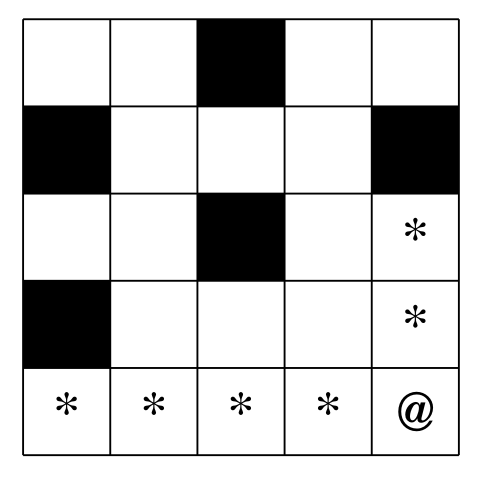
Posible estado inicial del juego.
Aqui '@' representa la ficha, '*' denota los cuadrados a los que se puede mover la ficha, los bloques blancos son el piso y los negros la pared.
En este caso, los estados posibles son todos los cuadrados blancos del laberinto. En el ejemplo anterior, los numeros Grundy son los siguientes:
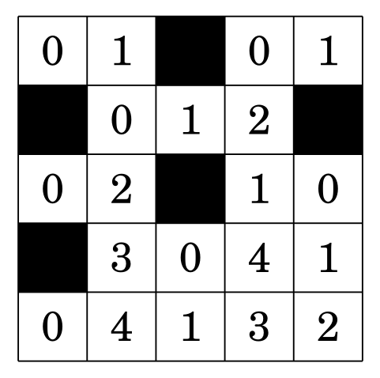
Asi, cada estado corresponde a un monton en el juego de Nim.
Subjuegos
Consideremos ahora el caso en que el juego consite de varios subjuegos y que, en cada turno, el jugador elige primero un subjuego al cual jugar y luego realiza un movimiento en dicho subjuego. Pierde el jugador que no puede realiza mas movimientos en ninguno de los subjuegos.
Resulta que el numero Grundy del juego es la suma de Nim de los numeros Grundy de cada subjuego. Por lo tanto, el juego puede ser jugado como juego de Nim por medio de calcular los numeros Grundy de cada subjuego y su suma de Nim.
Como ejemplo, consideremeos un juego que consiste en 3 subjuegos del laberinto cada uno con las mismas reglas que el ejemplo anterior. Asumiendo que en cada subjuego la ficha comienza en la esquina inferior derecha y que los laberintos son como se muestran a continuacion, su numero Grundy seria el siguiente:
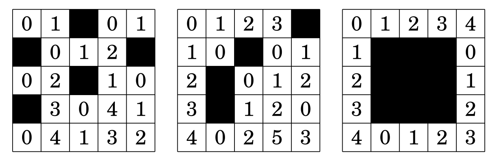
Notar que el estado inicial es un estado ganador.
El Juego de Grundy
En el juego de Grundy, inicialmente hay un monton con palos. En cada turno, el jugador elije un monton y lo divide en dos montones no vacios de diferente tamaño. Gana el jugador que realiza el ultimo movimiento.
Definamos como el numero Grundy de un monton compuesto de palos. puede ser calculada en base a calcular los numeros Grundy de todas las formas de dividr el monton de palos en otros dos montones. Por ejemplo, cuando , hay tres formas de dividr el monton de palos: , y . Luego,
En este juego, los casos bases son . Luego, los numero Grundy son:
Un conjunto de puntos es convexo si contiene todos los segmentos entre todo par de puntos del conjunto. ↩︎
Un grafo dirigido es funcional si cada nodo tiene exactamente una arista saliente. Esto significa que el grafo forma una coleccion de ciclos y caminos que terminan en un ciclo ↩︎
Un grafo es conexo si todos los nodos estan conectados por un camino ↩︎ ↩︎ ↩︎
Se denomina componente de un grafo a un subconjunto conexo de los nodos del mismo ↩︎
Un grafo se considera bipartito si sus nodos puedes ser coloreados usando solamente dos colores de manera tal de que dos nodos adyacentes no tengan el mismo color ↩︎ ↩︎ ↩︎ ↩︎
Un puentes una arista cuya eliminacion aumenta el numero de componentes conexas del grafo. ↩︎
Un punto de articulacion es un nodo cuya eliminacion (junto con sus aristas) desconecta el grafo ↩︎
Decimos que un camino es k-interno si todos los vertices intermedios (o sea, excluyendo al primero y al ultimo) tienen un indice menor o igual a k ↩︎
Decimos que un grafo es fuertemente conexo si existe un camino entre cada nodo y todos los demas ↩︎
Un camino Euleriano es un camino que recorre cada arista exactamente una vez. Por su parte, un circuito Euleriano es un camino Euleriano que comienza y termina en el mismo nodo ↩︎
Un camino Hamiltoniano es un camino que recorre cada nodo exactamente una vez. Por su parte, un circuito Hamiltoniano es un camino Hamiltoniano que comienza y termina en el mismo nodo ↩︎
Se entiende por matching de un grafo a un conjunto de aristas sin vertices en comun pertenecientes al grafo ↩︎ ↩︎ ↩︎
El diametro de un arbol es la longitud maxima de un camino entre dos nodos ↩︎
Para
nsuficientemente grande, la complejidad se asemeja mas a ↩︎Una bitmask es un numero entero visto por su valor en binario ↩︎